Chapter 7: Applications, Cryptography & the Quantum Industry¶
What will quantum technology actually be good for, and who is building it? This chapter gives an honest map of applications — chemistry, drug discovery, optimisation and finance — then explains the most urgent real-world impact: the threat to today's cryptography and the global move to post-quantum standards. It also covers quantum communication and sensing, the companies and money behind the industry, national programmes, and a toolkit for telling breakthroughs from hype.
7.1 Where Quantum Computers Could Help: The Application Map¶
Quantum computers are not faster computers for everything. They only help on problems with special mathematical structure that a quantum algorithm can exploit — simulating molecules and materials, breaking some codes, and perhaps certain sampling, search and linear-algebra tasks. Whether the speed-up is exponential or merely quadratic decides whether it survives real-world overheads.
Which problems might quantum speed up?
| Expected speed-up | Reality check | |
|---|---|---|
| Chemistry & materials | Exponential (some cases) | Strongest case; needs fault tolerance |
| Factoring / discrete logs | Exponential (Shor) | Breaks RSA/ECC; needs ~1M qubits |
| Unstructured search | Quadratic (Grover) | Overheads usually win |
| Optimisation | Unclear, heuristic | No proven practical advantage |
| Monte Carlo pricing | Quadratic | Needs fast logical gates |
| Machine learning | Unclear | Data loading, dequantisation |
| Linear systems (HHL) | Exponential with caveats | Strict input/output conditions |
Only a few problem classes have strong evidence of a large, robust speed-up.
Think of it like…
A quantum computer is like a heart surgeon rather than a family doctor: superb for a handful of very specific operations, and pointless for a routine check-up or a sprained ankle.
Real-world example
Northwind Logistics (fictional) asks consultant Amara whether to buy quantum time. She sorts its twelve computing workloads: payroll, web hosting and reporting gain nothing; route planning has only unproven heuristic gains; a battery-materials partner's simulations are a genuine long-term candidate. Her recommendation: a small exploration budget, a watching brief on chemistry, and starting post-quantum cryptography migration now.
How it works¶
- Identify the computational kernel — the hard mathematical core — of the business problem.
- Check whether a known quantum algorithm attacks that kernel, and whether the speed-up is exponential, polynomial or quadratic.
- Add the overheads: loading data in, reading answers out, error correction and slow logical gates.
- Compare against the best classical method on modern hardware, not a naive baseline.
- Estimate the qubits and runtime needed, then decide: ignore, watch, explore or invest.
Who uses it
R&D strategists, application scientists, innovation teams at banks, pharma, chemicals and car makers, and consultants who advise them on 'quantum readiness'.
Key takeaway
Memorise the rule of thumb: exponential speed-ups (simulation, factoring) are robust to overheads; quadratic (Grover-type) speed-ups are usually swallowed by error-correction costs on early fault-tolerant machines.
Going deeper
- Babbush et al., 'Focus beyond quadratic speedups for error-corrected quantum advantage' (PRX Quantum, 2021), estimated that quadratic speed-ups would need days or longer of runtime before beating classical hardware on early fault-tolerant machines.
- Hoefler, Häner and Troyer, 'Disentangling hype from practicality' (Communications of the ACM, 2023), argue useful advantage needs super-quadratic speed-ups and small input/output data — pointing mainly at chemistry and materials.
- The data-loading bottleneck: putting N classical numbers into quantum amplitudes generally costs about N operations, and fast quantum RAM (QRAM) has never been built at scale, which erodes many claimed exponential speed-ups.
- The readout bottleneck: measuring n qubits gives n bits per shot, so an algorithm whose answer is a huge vector (like HHL) only helps when you need a summary statistic, not the whole solution.
- McKinsey's Quantum Technology Monitor 2025 expected the largest value in chemicals, life sciences, finance and mobility, and its 2026 edition reported quantum-computing company revenue above $1 billion in 2025.
- Quantum machine learning has three flavours: classical data on quantum hardware, quantum data from experiments, and AI used to build better quantum computers — only the last two have strong evidence so far.
Common mistakes & misconceptions
- Believing quantum computers will speed up everyday software — spreadsheets, databases and web servers gain nothing and will stay classical.
- Counting a quadratic speed-up as decisive; with slow error-corrected gates it often needs impractically large problems before it wins.
- Ignoring data loading and readout costs when quoting exponential speed-ups for machine learning or linear algebra.
Try it: Back-of-envelope: when would a quadratic speed-up pay off?¶
# Illustrative assumptions in the spirit of Babbush et al. (2021)
classical_checks_per_s = 1e9 * 1000 # 1,000 CPU cores, 1e9 simple checks/s each
oracle_calls_per_s = 10 # one Grover step = many slow logical gates
for n in [1e12, 1e16, 1e20, 1e24]:
t_classical = n / classical_checks_per_s
t_quantum = n ** 0.5 / oracle_calls_per_s
winner = 'quantum' if t_quantum < t_classical else 'classical'
print(f'N={n:.0e}: classical {t_classical:.1e} s, quantum {t_quantum:.1e} s -> {winner}')
# Break-even sits where both runtimes are already absurdly long.
Key concepts, algorithms, hardware, tools & milestones¶
| Name | What it does | Example |
|---|---|---|
| Practical quantum advantage Industry & research usage · Concept · Emerging · Beginner |
A quantum computer solving a useful problem faster, cheaper or more accurately than the best classical method — end to end. | A chemistry firm counts advantage only if total time, including data preparation and error correction, beats its GPU cluster for the same accuracy. |
| Exponential speed-up Complexity theory · Concept · Current · Beginner |
Runtime grows polynomially on a quantum computer but exponentially for the best known classical method — the robust kind of speed-up. | Shor factors an n-bit number in roughly n³ steps, while the best classical algorithm needs sub-exponential but astronomically large time for 2,048 bits. |
| Quadratic speed-up Complexity theory · Concept · Current · Intermediate |
Quantum needs about √N steps where classical needs N, as in Grover search; gains shrink once error-correction overheads are counted. | Searching 10¹² items: 10⁶ quantum steps versus 10¹² classical, but each quantum step may be a million times slower. |
| Data-loading bottleneck Aaronson, 'Read the fine print' (2015) · Principle · Current · Intermediate |
Encoding large classical datasets into quantum states usually costs as much time as reading the data classically, cancelling claimed speed-ups. | Loading a 1-billion-entry customer table into amplitudes takes about a billion operations before any quantum algorithm starts. |
| Readout bottleneck Measurement theory · Principle · Current · Intermediate |
Each measurement returns only a few classical bits, so you cannot cheaply extract a large quantum solution vector. | HHL prepares a solution to a million-variable system, but reading every entry would need about a million repetitions. |
| Quantum machine learning (QML) Research field · Concept · Research · Intermediate |
Using quantum circuits as models or subroutines for learning tasks; promising in theory, unproven for practical classical-data problems. | A student trains a 4-qubit variational classifier on the Iris dataset; it works, but a logistic regression does equally well in milliseconds. |
| Quantum kernel methods Havlíček et al., Nature (2019) · Algorithm · Research · Advanced |
Map data into a quantum feature space and measure overlaps between states as a similarity kernel for a classical support-vector machine. | Researchers test quantum kernels on molecular data; for most datasets, classical kernels match the accuracy at a fraction of the cost. |
| Dequantised recommendation systems Ewin Tang (2018) · Milestone · Current · Advanced |
A classical algorithm matching a claimed exponential quantum speed-up for recommendations, showing many QML speed-ups rely on strong data-access assumptions. | Tang, then an undergraduate, showed classical sampling-based methods achieve similar scaling, deflating a flagship QML application. |
| Learning from quantum data Huang et al., Science (2022) · Concept · Research · Advanced |
Proven, sometimes exponential, advantages when a quantum computer directly processes quantum states from experiments or sensors. | A quantum memory stores copies of a lab-made quantum state and learns its properties with exponentially fewer experiments than measuring each copy separately. |
| AI for quantum Google DeepMind, IBM, NVIDIA and others · Concept · Emerging · Intermediate |
Using machine learning to design, calibrate, compile and error-correct quantum computers — the AI-quantum link with the clearest payoff today. | A neural-network decoder and AI-assisted transpiler passes reduce circuit depth and logical errors compared with hand-tuned methods. |
| 'Disentangling hype from practicality' Hoefler, Häner & Troyer, CACM (2023) · Resource · Current · Intermediate |
Influential paper arguing that quantum advantage will be limited to small-data, super-quadratic problems such as chemistry and materials. | An innovation team uses its criteria — small input, small output, super-quadratic speed-up — to filter twenty proposed use cases down to two. |
| 'Focus beyond quadratic speedups' Babbush et al., PRX Quantum (2021) · Resource · Current · Advanced |
Resource analysis showing quadratic speed-ups rarely win on early error-corrected hardware because logical gates are slow. | A product manager cites it to explain why a Grover-based scheduling pitch is not on the five-year roadmap. |
7.2 Chemistry & Materials: The Leading Use Case¶
Molecules and materials obey quantum mechanics, and the exact cost of simulating their electrons grows exponentially with size, so classical computers rely on approximations. A fault-tolerant quantum computer can represent electrons naturally and calculate energies of 'strongly correlated' systems — catalysts, magnets, battery materials — where approximations fail. That makes chemistry the most widely accepted killer application.
Think of it like…
Simulating a molecule classically is like predicting a symphony by writing out every possible combination of notes; a quantum computer is like hiring a real orchestra and simply listening.
Real-world example
GreenAmmonia Ltd (fictional) wants a gentler fertiliser catalyst, because the Haber-Bosch process uses roughly 1-2% of the world's energy. Its chemists screen candidates classically with density functional theory, but cannot trust those results for the iron-sulfur FeMoco cluster that bacteria use. They fund resource estimates to know when a fault-tolerant machine could compute FeMoco's energies to chemical accuracy.
How it works¶
- Pick the molecule and its 'active space' — the handful of electrons and orbitals that really matter.
- Write the electronic Hamiltonian and map electrons onto qubits (Jordan-Wigner or Bravyi-Kitaev).
- Prepare a good starting state from a classical calculation so the quantum algorithm converges.
- Run phase estimation (fault-tolerant) or VQE/sample-based methods (near-term) to obtain energies.
- Compare energies of reactants, intermediates and products to predict reaction barriers and rates, then validate experimentally.
Who uses it
Computational chemists and materials scientists in chemicals, energy, pharma and automotive firms, plus quantum application scientists at IBM, Google, Quantinuum, Microsoft, Phasecraft and Algorithmiq.
Key takeaway
Know the target: chemical accuracy is about 1 kcal/mol (≈1.6 millihartree), and FeMoco is the benchmark molecule quoted in almost every resource estimate.
Going deeper
- Exact 'full configuration interaction' calculations double in cost with each added orbital pair; the largest exact classical calculations handle only around two dozen electrons in two dozen orbitals.
- Reiher et al. (PNAS, 2017) produced the first serious FeMoco estimate; tensor-hypercontraction methods (Lee et al., PRX Quantum, 2021) cut it to roughly four million surface-code physical qubits running for days.
- In October 2025 Alice & Bob published a preliminary estimate that cat-qubit hardware could tackle FeMoco and P450 with about 99,000 physical qubits — a claim yet to be independently confirmed.
- IBM and RIKEN used sample-based quantum diagonalisation with up to 77 qubits plus the Fugaku supercomputer on iron-sulfur clusters (Science Advances, 2025) — a hybrid demonstration, not yet beyond classical reach.
- Battery work targets lithium-sulfur cathodes, solid electrolytes and degradation chemistry; Mercedes-Benz, Hyundai and others have run small studies with IBM and IonQ to build skills.
- The Fermi-Hubbard model of high-temperature superconductors is a favourite materials target because it needs comparatively few logical qubits for classically intractable sizes.
Common mistakes & misconceptions
- Thinking today's VQE results beat classical chemistry — molecules small enough for current devices are solved exactly on a laptop.
- Assuming quantum computers replace density functional theory; screening thousands of candidates stays classical, with quantum reserved for a few hard cases.
- Quoting a single qubit number for FeMoco without the error-rate, code and runtime assumptions that produced it.
Try it: Compute the hydrogen molecule's energy classically with PySCF¶
pip install pyscf
python - <<'EOF'
from pyscf import gto, scf, fci
mol = gto.M(atom='H 0 0 0; H 0 0 0.74', basis='sto-3g')
hf = scf.RHF(mol).run()
e_exact, _ = fci.FCI(hf).kernel()
print('Hartree-Fock energy:', hf.e_tot)
print('Exact (full CI) energy:', e_exact)
print('Correlation energy missed by HF:', e_exact - hf.e_tot)
EOF
Key concepts, algorithms, hardware, tools & milestones¶
| Name | What it does | Example |
|---|---|---|
| FeMoco Nitrogenase enzyme (Fe7MoS9C cluster) · Concept · Research · Intermediate |
Iron-molybdenum cofactor that lets bacteria fix nitrogen at room temperature; the standard benchmark for fault-tolerant chemistry estimates. | Resource papers ask: how many qubits and hours to compute FeMoco's ground-state energy to chemical accuracy? |
| Haber-Bosch process Industrial ammonia synthesis (1910s) · Concept · Current · Beginner |
High-temperature, high-pressure ammonia production feeding world agriculture; it consumes roughly 1-2% of global energy. | Understanding FeMoco could inspire catalysts that make fertiliser at mild conditions, cutting energy use and CO₂ emissions. |
| Strong electron correlation Electronic-structure theory · Concept · Current · Intermediate |
When electrons' motions are tightly linked, as in transition-metal catalysts, approximate classical methods become unreliable. | Two DFT functionals predict reaction barriers 10 kcal/mol apart for a manganese catalyst, so chemists cannot choose a design. |
| Active space CASSCF / CASCI methods · Concept · Current · Intermediate |
The selected subset of electrons and orbitals treated exactly, while the rest are approximated; it sets the qubit count. | Published FeMoco studies use active spaces of about 54-76 orbitals, needing roughly 108-152 qubits with Jordan-Wigner encoding. |
| Chemical accuracy Computational chemistry convention · Metric · Current · Beginner |
Energy error below about 1 kcal/mol (≈1.6 millihartree), small enough to predict reaction rates usefully. | A calculation 5 kcal/mol off may rank two catalysts wrongly, because rates depend exponentially on barrier height. |
| Density functional theory (DFT) Hohenberg-Kohn-Sham (1964-65) · Concept · Current · Intermediate |
The workhorse classical method for molecules and solids: fast and usually good, but unreliable for strongly correlated systems. | A battery firm screens 10,000 cathode materials with DFT overnight on a cluster before any quantum study is considered. |
| Coupled cluster CCSD(T) Quantum chemistry 'gold standard' · Concept · Current · Advanced |
Highly accurate classical method for weakly correlated molecules; cost grows roughly as the seventh power of system size. | Quantum chemistry pilots must beat CCSD(T) or DMRG on the same molecule to claim any advantage. |
| Jordan-Wigner & Bravyi-Kitaev encodings Jordan & Wigner (1928); Bravyi & Kitaev (2002) · Math · Current · Advanced |
Recipes that translate fermionic electron operators into qubit Pauli operators so molecules can run on quantum hardware. | OpenFermion converts H₂'s Hamiltonian into a four-qubit Pauli sum with Jordan-Wigner in one function call. |
| IBM-RIKEN iron-sulfur cluster study IBM & RIKEN, Science Advances (2025) · Milestone · Emerging · Advanced |
Chemistry application of sample-based quantum diagonalisation, pairing quantum processors with a supercomputer on biologically important iron-sulfur clusters. | IBM and RIKEN paired Heron processors with Fugaku to study [2Fe-2S] and [4Fe-4S] iron-sulfur clusters using up to 77 qubits. |
| Battery materials simulation Automotive & energy R&D · Concept · Research · Beginner |
Modelling cathodes, electrolytes and degradation reactions to design cheaper, longer-lasting batteries. | A car maker studies lithium-sulfur reaction intermediates on small quantum circuits to train staff before fault-tolerant machines arrive. |
| CO₂ capture & conversion catalysts Climate-tech R&D · Concept · Research · Intermediate |
Designing catalysts that bind or convert carbon dioxide; involves transition metals where classical methods struggle. | Microsoft researchers published resource estimates for simulating a ruthenium catalyst that turns CO₂ into methanol. |
| Fermi-Hubbard model Hubbard (1963) · Math · Research · Advanced |
Simplified lattice model of interacting electrons, thought to capture high-temperature superconductivity; an early target for quantum simulation. | Phasecraft and Google have run small Fermi-Hubbard simulations on superconducting processors to test algorithms. |
| PySCF Open source (Python) · Software · Current · Intermediate |
Python quantum-chemistry package used to build Hamiltonians and classical reference energies for quantum algorithms. | A student computes H₂'s Hartree-Fock and exact energies in PySCF, then feeds the integrals to Qiskit Nature. |
| OpenFermion Google Quantum AI (open source) · Software · Current · Advanced |
Library for building and transforming fermionic Hamiltonians into qubit operators and circuits for chemistry algorithms. | Researchers compute resource estimates for a nitrogenase active space using OpenFermion's tensor-factorisation tools. |
7.3 Drug Discovery & Life Sciences¶
Drug discovery means finding a molecule that sticks to a disease-causing protein strongly and safely. Quantum computers might one day calculate those binding energies and enzyme reactions more accurately. But most of the pipeline — screening millions of compounds, biology, clinical trials — stays classical, and AI tools such as AlphaFold already transformed parts of it.
Think of it like…
A quantum computer in drug discovery is like a precision microscope added to a long factory line: it may sharpen one inspection step, but it will not run the factory.
Real-world example
Helix Biotherapeutics (fictional) screens 5 million compounds by classical docking and machine learning, narrows them to 50, then needs accurate energies for a drug binding near an iron atom in an enzyme. Today it uses QM/MM methods on a GPU cluster; its quantum team runs 30-qubit fragment experiments to build skills, budgeting for no production use before fault-tolerant machines arrive.
How it works¶
- Identify a target protein using biology, genomics and AI structure prediction.
- Screen millions of candidate molecules classically with docking and machine-learning models.
- Optimise a few leads with accurate physics — the QM/MM step where quantum computers could contribute.
- Predict absorption, metabolism and toxicity (ADMET), then test in the lab.
- Run pre-clinical and clinical trials — a decade-long phase quantum computing does not shorten.
Who uses it
Computational chemists, structural biologists and data scientists at pharmaceutical companies, plus quantum start-ups and consortia working with pharma partners.
Key takeaway
In interviews, place quantum precisely: it could improve the small, high-accuracy quantum-mechanical region inside QM/MM calculations, not the screening of millions of molecules.
Going deeper
- Bringing one new drug to market has been estimated at around $2.6 billion and 10-15 years (Tufts CSDD, 2014), mostly spent in clinical trials that better simulation cannot skip.
- QM/MM methods — recognised by the 2013 Nobel Prize in Chemistry (Karplus, Levitt, Warshel) — treat the active site quantum mechanically and the rest of the protein classically; quantum computers would replace the QM part.
- Goings et al. (PNAS, 2022), a Boehringer Ingelheim and Google study, found cytochrome P450 enzymes a more attractive early target than FeMoco, with lower estimated fault-tolerant costs.
- AlphaFold 2 predicted structures for over 200 million proteins, and its creators shared the 2024 Nobel Prize in Chemistry — a reminder that classical AI is the fast-moving competitor.
- Embedding methods such as density matrix embedding theory split a molecule so a small quantum region of tens of qubits sits inside a classical environment.
- The Novo Nordisk Foundation Quantum Computing Programme in Denmark funds long-term research aimed at life-science applications of fault-tolerant machines.
Common mistakes & misconceptions
- Claiming quantum computers will 'design drugs' — they could improve one physics calculation; biology, safety and trials dominate cost and time.
- Treating small protein-folding demos on quantum hardware as competitive; classical AI predicts full protein structures far better today.
- Forgetting that pharma needs validated, reproducible results — noisy one-off hardware runs are not acceptable evidence.
Key concepts, algorithms, hardware, tools & milestones¶
| Name | What it does | Example |
|---|---|---|
| QM/MM Warshel & Levitt (1976); Nobel 2013 · Concept · Current · Intermediate |
Hybrid simulation: quantum mechanics for the reactive site, classical mechanics for the rest of a large biomolecule. | Helix models a drug binding an enzyme's iron centre with 120 atoms in QM and 10,000 atoms in MM. |
| Binding free energy Computational drug design · Metric · Current · Intermediate |
How strongly a drug sticks to its target; errors of 1-2 kcal/mol change predicted potency roughly tenfold. | Chemists rank 50 lead compounds by predicted binding free energy before synthesising the top ten. |
| Docking & virtual screening Classical software (e.g. AutoDock Vina) · Tool · Current · Beginner |
Fast classical scoring of how millions of molecules might fit a protein pocket; the high-throughput stage before precise methods. | A screening run scores 5 million compounds overnight on cloud CPUs and keeps the best 5,000. |
| AlphaFold Google DeepMind & EMBL-EBI · Software · Current · Beginner |
AI system that predicts 3-D protein structures from amino-acid sequences; its database covers over 200 million proteins. | A biologist downloads a predicted structure of a parasite enzyme to choose a binding pocket for screening. |
| Quantum embedding methods DMET and related methods · Algorithm · Research · Advanced |
Divide a large system so only a small, strongly correlated fragment runs on the quantum computer. | A 40-qubit fragment containing a metal site is embedded in a classically treated protein environment. |
| Metalloenzymes Biochemistry · Concept · Current · Intermediate |
Enzymes with metal atoms at their active sites; their electronic structure is hard classically and a natural quantum target. | Cytochrome P450 enzymes, which metabolise most drugs, contain an iron-heme centre that challenges DFT. |
| Cytochrome P450 resource study Boehringer Ingelheim & Google, PNAS (2022) · Milestone · Research · Advanced |
Study comparing classical and fault-tolerant quantum costs for P450 enzymes, suggesting a promising early drug-metabolism target. | Pharma teams cite it when arguing that drug metabolism, not just fertiliser chemistry, could see early quantum value. |
| mRNA structure prediction Moderna & IBM (2024-25) · Milestone · Research · Advanced |
Research using quantum optimisation methods on IBM hardware to predict how short mRNA sequences fold. | The team ran small mRNA secondary-structure problems on quantum hardware, matching classical solvers at that scale. |
| Protein folding on quantum hardware Academic & industry research · Concept · Research · Intermediate |
Encoding simplified lattice models of peptide folding as optimisation problems for quantum devices; limited to very small chains. | A 7-amino-acid peptide folding demo runs on a quantum processor, while AlphaFold handles 1,000-residue proteins classically. |
| ADMET prediction Pharmaceutical R&D · Concept · Current · Intermediate |
Predicting absorption, distribution, metabolism, excretion and toxicity of drug candidates, today mostly with classical machine learning. | A model flags a lead compound likely to block a heart ion channel, so chemists modify it early. |
| Algorithmiq Start-up, Helsinki (founded 2020) · Organisation · Emerging · Intermediate |
Quantum software company focused on life-science algorithms and error mitigation, partnering with IBM. | Algorithmiq contributes chemistry experiments to IBM's community tracker of candidate quantum-advantage results. |
| Novo Nordisk Foundation Quantum Computing Programme Novo Nordisk Foundation, Denmark · Organisation · Emerging · Intermediate |
Long-term Danish research programme building fault-tolerant hardware and algorithms with life-science applications in mind. | Copenhagen researchers in the programme study algorithms for chemistry problems relevant to drug development. |
7.4 Optimisation & Logistics: An Honest Look¶
Optimisation means picking the best choice among astronomically many — delivery routes, factory schedules, portfolios. Vendors hope quantum annealers or the QAOA algorithm will find better answers faster. Today there is no proven, practical quantum speed-up for these problems, and mature classical solvers set a very high bar.
Three ways to attack optimisation
| Classical solvers | Quantum annealing | QAOA (gate-based) | |
|---|---|---|---|
| Maturity | Decades, industrial | Commercial, niche | Research |
| Problem size | Millions of variables | Thousands (plus hybrid) | Tens to ~100 qubits |
| Optimality proof | Often (MIP gaps) | No | No |
| Proven speed-up | Baseline | None in general | None in general |
| Best use today | Production | Pilots, research | Algorithm research |
Classical solvers remain the baseline any quantum method must beat.
Think of it like…
It is like hiring an unusual new climber to find the lowest valley in a foggy mountain range: occasionally clever, but the experienced local guides — classical solvers — already know most of the shortcuts.
Real-world example
FreshCart (fictional) routes 300 grocery vans. Its data team writes the problem as a QUBO with 3,000 binary variables and runs D-Wave's hybrid solver, then compares with Gurobi and Google OR-Tools. The classical solvers find routes within 1% of the quantum-hybrid answer at lower cost, so FreshCart keeps classical tools and re-tests yearly.
How it works¶
- Translate the business problem into binary decisions with a cost function and penalties for broken rules (a QUBO or Ising model).
- Embed the variables onto the annealer's qubit graph, or compile a QAOA circuit for a gate-based machine.
- Run hundreds or thousands of shots and keep the lowest-cost samples.
- Polish results with classical local search and check that all constraints hold.
- Benchmark time-to-solution and solution quality against strong classical solvers on identical instances.
Who uses it
Operations-research analysts, supply-chain and logistics teams, airline and telecom planners, and quantum application scientists at D-Wave, Kipu Quantum, Q-CTRL and consultancies.
Key takeaway
Exam fact: quantum computers are not believed to solve NP-hard problems efficiently; the realistic hopes are heuristic gains or Grover-style quadratic speed-ups on fault-tolerant machines.
Going deeper
- QUBO (quadratic unconstrained binary optimisation) and the Ising model are equivalent through the change of variables x = (1 + s) / 2, so any QUBO can run on an annealer.
- Constraints become penalty terms; choosing penalty weights badly either breaks constraints or flattens the energy landscape, a major practical headache.
- Minor embedding maps one logical variable onto a chain of physical qubits; chains consume hardware and can 'break', degrading answers on densely connected problems.
- Complexity theory does not expect BQP to contain NP-complete problems; Montanaro (2020) showed quadratic speed-ups for branch-and-bound search, but only on fault-tolerant hardware.
- Fair benchmarks report time-to-solution at a target quality, include classical pre- and post-processing, and compare against tuned heuristics such as simulated annealing, parallel tempering and commercial MIP solvers.
- Quantum-inspired hardware — Fujitsu's Digital Annealer and Toshiba's SQBM+ — solves Ising problems on classical chips and is a tough comparison point.
Common mistakes & misconceptions
- Comparing a quantum run against brute force or an untuned solver; always benchmark against Gurobi, CPLEX, OR-Tools or tuned heuristics.
- Reporting quantum-only runtime while hiding classical embedding, pre-processing and post-processing time.
- Calling a hybrid solver result 'quantum advantage' when the classical part does most of the work.
Try it: Solve a tiny QUBO by brute force (what an annealer samples)¶
import itertools
# Pick 2 of 3 warehouses; cost = opening costs + penalty if count != 2
open_cost = [4, 3, 5]
P = 10
best = None
for x in itertools.product([0, 1], repeat=3):
cost = sum(c * xi for c, xi in zip(open_cost, x)) + P * (sum(x) - 2) ** 2
if best is None or cost < best[0]:
best = (cost, x)
print('best choice', best[1], 'cost', best[0]) # opens warehouses 0 and 1
Key concepts, algorithms, hardware, tools & milestones¶
| Name | What it does | Example |
|---|---|---|
| QUBO Operations research formulation · Math · Current · Intermediate |
Quadratic unconstrained binary optimisation: minimise a quadratic function of 0/1 variables; the input format for annealers and QAOA. | Choosing which 20 of 100 delivery slots to fill becomes a QUBO with 100 variables and a penalty enforcing exactly 20. |
| Ising model Statistical physics (Ising, 1925) · Math · Current · Intermediate |
Energy function of interacting ±1 spins; mathematically equivalent to QUBO and native to quantum annealers. | A max-cut problem on a social network maps to spins whose couplings reward placing friends in opposite groups. |
| Quantum annealing for business problems D-Wave Quantum · Concept · Current · Intermediate |
Slowly changing a quantum system's energy landscape so it settles into low-cost solutions; sold commercially for optimisation pilots. | A manufacturer runs shift scheduling on D-Wave's cloud service and compares results with its existing MIP model. |
| QAOA for optimisation Farhi, Goldstone & Gutmann (2014) · Algorithm · Research · Advanced |
Gate-based variational algorithm alternating cost and mixer layers; studied for max-cut and scheduling with no proven practical advantage. | A team runs depth-3 QAOA for max-cut on 30 qubits; a classical solver finds the optimum faster. |
| Hybrid solvers D-Wave Leap and others · Service · Current · Intermediate |
Cloud services splitting work between classical heuristics and quantum processors so problems far larger than the chip fit. | FreshCart submits a 3,000-variable routing model; the service decides internally when to call the quantum processor. |
| Gurobi Gurobi Optimization · Software · Current · Intermediate |
Leading commercial mixed-integer programming solver; the classical benchmark quantum optimisation claims must beat. | An airline crew-scheduling model with 2 million variables solves in Gurobi within the overnight planning window. |
| Google OR-Tools Google (open source) · Software · Current · Beginner |
Free toolkit for routing, scheduling and constraint programming, ideal for building honest classical baselines. | A student solves a 50-stop vehicle-routing problem in OR-Tools in seconds before trying QAOA. |
| Simulated annealing & parallel tempering Kirkpatrick et al. (1983); Swendsen & Wang (1986) · Algorithm · Current · Intermediate |
Classical randomised heuristics that explore energy landscapes; strong, cheap baselines for annealer benchmarks. | Researchers find GPU parallel tempering matches annealer solution quality on spin-glass benchmarks. |
| Vehicle routing problem (VRP) Operations research · Concept · Current · Beginner |
Finding the cheapest set of routes for a fleet serving many customers under capacity and time-window constraints. | A courier with 40 vans and 1,200 parcels solves a VRP every morning, a common quantum pilot topic. |
| Fujitsu Digital Annealer Fujitsu · Hardware · Current · Intermediate |
Classical CMOS hardware inspired by annealing that solves large QUBOs; a 'quantum-inspired' competitor. | A logistics firm solves warehouse-picking QUBOs on Fujitsu's cloud Digital Annealer without any qubits. |
| Toshiba SQBM+ Toshiba · Software · Current · Intermediate |
Simulated Bifurcation Machine: a quantum-inspired classical algorithm for Ising problems running on GPUs or FPGAs. | A trading firm tests SQBM+ for fast portfolio selection, achieving millisecond responses on GPUs. |
| Time-to-solution (TTS) Benchmarking practice · Metric · Current · Intermediate |
Expected time to find a solution of target quality with given confidence, counting repeated runs; the fair way to compare solvers. | An annealer needs 1,000 shots of 20 µs, plus 0.5 s of overheads, to reach 99% confidence. |
| Quantum branch-and-bound speed-up Montanaro, Physical Review Research (2020) · Algorithm · Research · Advanced |
Quantum tree search giving roughly quadratic speed-ups for exact optimisation, useful only on fault-tolerant machines. | Resource studies conclude problems must be huge before the quadratic gain outweighs slow logical gates. |
7.5 Finance: Pricing, Risk & Portfolios¶
Banks run enormous Monte Carlo simulations to price derivatives and measure risk, and solve optimisation problems to build portfolios. Quantum amplitude estimation could reach the same accuracy with quadratically fewer samples, but only on large fault-tolerant machines with fast logical gates. Near-term finance work is exploratory — and banks' most urgent quantum task is protecting themselves with post-quantum cryptography.
Think of it like…
Classical Monte Carlo is like estimating a lake's average depth by dropping thousands of weights; amplitude estimation is a sonar that needs far fewer pings — but the sonar has not been built yet.
Real-world example
Meridian Bank (fictional) prices a basket option overnight with 1 million Monte Carlo paths. Making the price ten times more accurate needs 100 times more paths classically, but only about ten times more quantum queries. Published estimates suggest thousands of logical qubits and very fast gates, so Meridian runs small pilots while prioritising PQC.
How it works¶
- Model future asset prices as a probability distribution (e.g. geometric Brownian motion).
- Load that distribution into qubit amplitudes with a state-preparation circuit.
- Encode the option payoff as a rotation on an extra qubit.
- Use amplitude estimation to read out the expected payoff: error falls as 1/N instead of 1/√N.
- Compare cost and accuracy with GPU Monte Carlo using variance-reduction tricks.
Who uses it
Quantitative analysts, risk managers and research teams at banks such as JPMorgan Chase, HSBC and Goldman Sachs, plus fintech start-ups and regulators planning PQC.
Key takeaway
Remember the scaling: classical Monte Carlo error ∝ 1/√N, amplitude estimation error ∝ 1/N — a quadratic gain that needs fault tolerance to matter.
Going deeper
- Chakrabarti et al. (Goldman Sachs and IBM, Quantum, 2021) estimated about 7,500 logical qubits and a T-depth around 54 million for advantage in derivative pricing — far beyond today's machines.
- Because traders need prices within seconds, the logical clock speed matters as much as qubit count; slow error-corrected gates can erase the quadratic gain.
- HSBC and IBM reported in September 2025 that adding quantum-generated features improved predictions of whether bond trades would fill by up to 34%; independent experts debated whether classical methods could match it.
- JPMorgan Chase, Quantinuum and partners demonstrated certified randomness on a 56-qubit H2 machine (Nature, March 2025) — randomness verifiably produced by quantum hardware.
- Finance regulators focus on cryptography: the G7 Cyber Expert Group urged quantum-risk planning in 2024, and the BIS Innovation Hub's Project Leap tested PQC in payment systems.
- Portfolio optimisation maps to QUBO with budget constraints, but classical quadratic-programming solvers handle thousands of assets quickly and remain the benchmark.
Common mistakes & misconceptions
- Assuming amplitude estimation helps today; on noisy hardware, deep amplitude-estimation circuits fail long before reaching useful accuracy.
- Ignoring state-preparation cost — loading a realistic price distribution can dominate the whole algorithm.
- Treating a vendor-bank press release as proof of advantage without a published, reproducible classical comparison.
Try it: See classical Monte Carlo's 1/sqrt(N) error scaling¶
import random, math
# Estimate E[max(S-100, 0)] for S ~ Normal(100, 20) — a toy call option
def estimate(n):
return sum(max(random.gauss(100, 20) - 100, 0) for _ in range(n)) / n
true = 20 / math.sqrt(2 * math.pi) # exact answer ~7.979
for n in [100, 10_000, 1_000_000]:
err = abs(estimate(n) - true)
print(f'N={n:>9,}: error {err:.4f}') # ~10x smaller per 100x more samples
Key concepts, algorithms, hardware, tools & milestones¶
| Name | What it does | Example |
|---|---|---|
| Monte Carlo simulation Metropolis & Ulam (1949) · Concept · Current · Beginner |
Estimating averages by random sampling; banks run billions of paths nightly for pricing and risk. | A risk desk simulates 10 million interest-rate paths to compute a portfolio's expected loss. |
| Amplitude estimation for pricing Brassard et al. (2002); finance work by Woerner & Egger (2019) · Algorithm · Research · Advanced |
Quantum routine estimating an expected payoff with error ∝ 1/N, quadratically better than classical sampling. | A European call option priced to 0.1% error would need ~10⁶ classical samples but ~10³ quantum queries. |
| Derivative pricing Quantitative finance · Concept · Current · Intermediate |
Valuing options and other contracts whose payoff depends on uncertain future prices; a classic Monte Carlo workload. | Meridian prices exotic basket options on five stocks overnight on a GPU farm. |
| Value at Risk (VaR) & CVaR Basel framework · Metric · Current · Intermediate |
Risk measures giving the loss threshold, or average tail loss, at a confidence level such as 99%. | A bank reports a one-day 99% VaR of £40 million, estimated by Monte Carlo simulation. |
| Portfolio optimisation Markowitz (1952) · Concept · Current · Beginner |
Choosing asset weights that balance expected return against risk; often formulated as a QUBO for quantum pilots. | A fund selects 30 of 500 stocks with a budget constraint, testing QAOA against classical solvers. |
| Derivative-pricing threshold estimate Chakrabarti et al., Goldman Sachs & IBM (2021) · Milestone · Research · Advanced |
Landmark resource estimate: about 7,500 logical qubits and very fast gates needed for advantage in option pricing. | A bank's quantum team uses the estimate to set expectations: no pricing advantage this decade without major hardware progress. |
| HSBC-IBM bond-trading trial HSBC & IBM (September 2025) · Milestone · Research · Intermediate |
Reported up to 34% better prediction of bond-trade fills using quantum-generated features; experts debated its classical replicability. | Analysts cite it as the first bank-scale quantum trading claim, while asking for stronger classical baselines. |
| Certified randomness JPMorgan Chase, Quantinuum et al., Nature (2025) · Milestone · Emerging · Advanced |
Random numbers whose freshness is mathematically verified as coming from a quantum computer, useful for lotteries, audits and cryptography. | A 56-qubit H2 machine produced random bits that classical supercomputers verified could not be faked in the time allowed. |
| Credit risk & CVA Quantitative finance · Concept · Current · Intermediate |
Estimating losses from counterparties defaulting, including credit valuation adjustment; heavy nested Monte Carlo workloads. | Researchers study amplitude-estimation circuits for credit-portfolio loss distributions with few correlated borrowers. |
| Fraud detection with QML Bank research teams · Concept · Research · Intermediate |
Exploratory use of quantum kernels or classifiers to flag fraudulent transactions; no demonstrated advantage over classical ML. | A pilot matches a gradient-boosted classifier's accuracy but runs 1,000 times slower on quantum hardware. |
| GPU Monte Carlo NVIDIA CUDA, classical baseline · Tool · Current · Intermediate |
Massively parallel classical simulation that sets a high bar for any quantum finance claim. | A desk prices 50,000 options per second on a GPU server, making quantum pilots hard to justify. |
| Project Leap BIS Innovation Hub with central banks · Organisation · Current · Intermediate |
Bank for International Settlements project testing post-quantum cryptography in central-bank payment infrastructure. | Phase 1 tested quantum-safe encryption on a link between the Banque de France and Deutsche Bundesbank. |
| G7 Cyber Expert Group quantum statement G7 finance ministries (2024) · Standard · Current · Intermediate |
Statement urging financial firms and regulators to plan for quantum risks, inventory cryptography and prepare migration. | A European bank's board cites the statement when approving a five-year PQC migration budget. |
7.6 How Quantum Computers Threaten Today's Cryptography¶
Internet security depends on public-key cryptography — RSA and elliptic curves — whose safety rests on factoring and discrete logarithms being hard. Shor's algorithm makes those problems easy for a large fault-tolerant quantum computer. Symmetric ciphers like AES and hash functions are only weakened by Grover's algorithm and stay safe with longer keys. No such machine exists yet, but data recorded today can be decrypted later.
Think of it like…
It is like learning that a future locksmith will own a master key for every padlock of a popular design — and that thieves are already photographing locked boxes to open once that key exists.
Real-world example
Ravenwood Health (fictional) keeps patient records that must stay confidential for 25 years. Using Mosca's inequality: data lifetime X = 25 years plus migration time Y = 5 years equals 30, while a cryptographically relevant quantum computer might arrive in Z = 10-15 years. Since X + Y > Z, Ravenwood is already late and prioritises hybrid post-quantum key exchange.
How it works¶
- An adversary records encrypted traffic and key exchanges today ('harvest now, decrypt later').
- Years later, a cryptographically relevant quantum computer runs Shor's algorithm on the recorded ECDH or RSA key exchange.
- The recovered session keys decrypt the stored traffic.
- Once such a machine exists, it can also forge signatures — fake certificates, software updates or transactions.
- Symmetric keys face only Grover's square-root speed-up, so AES-256 and SHA-384 remain strong.
Who uses it
Security architects, CISOs, cryptographers, PKI and identity teams, government security agencies, and anyone holding data that must stay secret for a decade or more.
Key takeaway
One-line answer: Shor breaks RSA, Diffie-Hellman and elliptic curves completely; Grover only halves symmetric security bits, so use AES-256 and move public-key crypto to PQC.
Going deeper
- Gidney (May 2025) estimated RSA-2048 could be factored in under a week with fewer than one million noisy qubits at 0.1% error and a 1 µs cycle — down from 20 million qubits in Gidney and Ekerå (2019).
- In March 2026 Google Quantum AI estimated that 256-bit elliptic-curve keys (as used by Bitcoin) need fewer than 1,200-1,450 logical qubits and about 70-90 million Toffoli gates — under 500,000 physical qubits running for minutes.
- Google published that elliptic-curve result with a zero-knowledge proof instead of the circuits, and set itself a 2029 target for its own post-quantum transition.
- Grover parallelises poorly — splitting the search over k machines only gains √k — so NIST still considers AES-128 adequate, while NSA's CNSA 2.0 requires AES-256 and SHA-384 or SHA-512.
- Mosca's inequality: if X (how long data must stay secret) plus Y (migration time) exceeds Z (time until a quantum attack), you are already exposed.
- Signatures are not retroactively at risk like encryption, but long-lived keys — root certificates, firmware signing, blockchain addresses with exposed public keys — must be replaced before a quantum attacker appears.
Common mistakes & misconceptions
- Believing quantum computers break all encryption — AES-256, SHA-2/SHA-3 and well-designed symmetric systems remain secure.
- Thinking there is nothing to do until a quantum computer exists — harvest-now-decrypt-later makes long-lived secrets vulnerable today.
- Quoting a precise 'Q-Day' year as fact; expert estimates span a decade or more and keep moving as algorithms improve.
Try it: See which key exchange and signature a website uses (OpenSSL)¶
openssl s_client -connect example.com:443 -brief </dev/null 2>&1 | grep -Ei 'protocol|group|temp key|signature'
# Classical results like X25519 or ECDSA are quantum-vulnerable;
# X25519MLKEM768 indicates a hybrid post-quantum key exchange.
Key concepts, algorithms, hardware, tools & milestones¶
| Name | What it does | Example |
|---|---|---|
| Shor's impact on public-key crypto Shor (1994) · Concept · Current · Beginner |
A large fault-tolerant quantum computer running Shor's algorithm breaks RSA, Diffie-Hellman and elliptic-curve cryptography outright. | Every TLS certificate signed with RSA-2048 or ECDSA P-256 would become forgeable once such a machine exists. |
| Grover's impact on symmetric keys Grover (1996) · Concept · Current · Beginner |
Square-root brute-force speed-up roughly halves symmetric security bits; doubling key length restores the margin. | AES-256 keeps about 128-bit strength against Grover, which is why CNSA 2.0 mandates it. |
| RSA Rivest, Shamir & Adleman (1977) · Algorithm · Legacy · Beginner |
Public-key system based on the difficulty of factoring large numbers; used for signatures and key transport, broken by Shor. | A 2048-bit RSA certificate protects a bank's website today but must be replaced before quantum attacks arrive. |
| Elliptic-curve cryptography (ECDH, ECDSA, EdDSA) Koblitz & Miller (1985) · Algorithm · Legacy · Intermediate |
Compact public-key schemes based on elliptic-curve discrete logarithms; even easier for Shor than RSA at equal classical strength. | X25519 key exchange in TLS 1.3 and ECDSA in Bitcoin both rely on curves a quantum computer could break. |
| Cryptographically relevant quantum computer (CRQC) Term used by NSA, NCSC, NIST · Concept · Research · Beginner |
A future quantum computer big and reliable enough to break real-world public-key cryptography; none exists in 2026. | Planners assume a CRQC needs hundreds of thousands to about a million high-quality physical qubits. |
| Q-Day Industry term · Concept · Research · Beginner |
The hypothetical day a CRQC can break widely used public-key cryptography; estimates vary widely and keep shifting. | A CISO plans for Q-Day possibly in the early-to-mid 2030s while acknowledging deep uncertainty. |
| Harvest now, decrypt later (HNDL) Threat model (a.k.a. store now, decrypt later) · Concept · Current · Beginner |
Adversaries record encrypted data today to decrypt it once quantum computers arrive; the main reason to migrate early. | Diplomatic cables captured in 2026 could be readable in the 2030s if key exchange used only ECDH. |
| Mosca's inequality Michele Mosca (2015) · Principle · Current · Beginner |
If data-secrecy lifetime plus migration time exceeds time until a quantum attack, you are already at risk. | X = 25, Y = 5, Z = 15 years: 25 + 5 > 15, so Ravenwood Health must start migrating now. |
| RSA-2048 estimate (Gidney 2025) Craig Gidney, Google Quantum AI · Milestone · Research · Advanced |
Planning benchmark: RSA-2048 factored in under a week with fewer than one million noisy qubits at 0.1% error. | Security teams cite the twentyfold drop since 2019 as evidence that timelines can shrink suddenly. |
| ECDLP-256 estimate (Google 2026) Google Quantum AI et al. (March 2026) · Milestone · Research · Advanced |
Estimate that 256-bit elliptic-curve keys need under 1,450 logical qubits, or under 500,000 physical qubits running minutes. | Cryptocurrency developers cite it when proposing migration of exposed-public-key coins to post-quantum signatures. |
| Quantum Threat Timeline Report Global Risk Institute (Mosca & Piani), annual · Resource · Current · Intermediate |
Yearly survey of leading experts on the likelihood of a CRQC within 5, 10, 15 and 30 years. | A risk committee uses the survey's probability ranges instead of a single 'Q-Day' date in its threat model. |
| Cryptocurrency exposure Bitcoin, Ethereum and others · Concept · Current · Intermediate |
Blockchains rely on ECDSA or EdDSA signatures; coins whose public keys are visible on-chain could be stolen by a CRQC. | Early Bitcoin outputs paying directly to public keys are often cited as the most exposed holdings. |
| Long-lived signing keys PKI and firmware security · Concept · Current · Intermediate |
Root certificates and firmware-signing keys valid for decades must be quantum-safe well before a CRQC appears. | A car maker signs 15-year-lifetime vehicle firmware with hash-based signatures to avoid future forgery. |
7.7 Post-Quantum Cryptography Standards¶
Post-quantum cryptography (PQC) is new classical cryptography — running on ordinary computers and chips — built on maths problems believed hard even for quantum computers, such as lattices, hash functions and error-correcting codes. NIST published the first three standards in August 2024: FIPS 203 (ML-KEM), FIPS 204 (ML-DSA) and FIPS 205 (SLH-DSA), with more on the way.
Think of it like…
It is like replacing a lock design that a future master key can open with a completely different mechanism — fitted to the same doors, used in the same way, and needing no exotic hardware.
Real-world example
Lumen Pay (fictional) upgrades its TLS gateway to the hybrid X25519MLKEM768 key exchange. The client's key share grows from 32 bytes to 1,216 bytes, and handshake time rises by well under a millisecond on modern CPUs. Swapping certificates to ML-DSA-65 adds several kilobytes per certificate chain, which its team tests against old middleboxes.
How it works¶
- 2016: NIST calls for quantum-resistant algorithms; 69 complete submissions enter round 1 in 2017.
- 2022: after three rounds of public cryptanalysis, NIST selects CRYSTALS-Kyber, CRYSTALS-Dilithium, Falcon and SPHINCS+.
- August 2024: FIPS 203 (ML-KEM), FIPS 204 (ML-DSA) and FIPS 205 (SLH-DSA) are published.
- March 2025: HQC, a code-based KEM, is chosen as a backup to ML-KEM; FN-DSA (Falcon) and HQC standards are still being finalised.
- Protocols adopt them, usually first as hybrids that combine a classical and a post-quantum algorithm.
Who uses it
Cryptography engineers, PKI and HSM vendors, browser and OS developers, protocol designers at the IETF, and security architects choosing algorithms.
Key takeaway
Memorise the trio: FIPS 203 = ML-KEM (key exchange, from Kyber), FIPS 204 = ML-DSA (signatures, from Dilithium), FIPS 205 = SLH-DSA (hash-based signatures, from SPHINCS+).
Going deeper
- NIST security categories 1, 3 and 5 match the brute-force difficulty of AES-128, AES-192 and AES-256; ML-KEM-512/768/1024 and ML-DSA-44/65/87 map to these levels.
- ML-KEM-768 has a 1,184-byte public key, 1,088-byte ciphertext and 32-byte shared secret; ML-DSA-65 has a 1,952-byte public key and 3,309-byte signature.
- ML-KEM and ML-DSA rest on Module Learning With Errors over structured lattices; SLH-DSA relies only on hash-function security, making it conservative but large and slow to sign.
- Stateful hash-based signatures LMS and XMSS (NIST SP 800-208, 2020) are approved for firmware signing, but signers must never reuse a one-time key state.
- The hybrid TLS group X25519MLKEM768 (IANA code point 0x11EC) combines both shared secrets, so security holds if either algorithm survives.
- NIST is still finalising FN-DSA (Falcon, planned FIPS 206) and HQC (planned FIPS 207), and runs an additional signature 'on-ramp' seeking schemes with smaller signatures.
Common mistakes & misconceptions
- Confusing PQC with quantum cryptography — PQC is ordinary software and needs no quantum hardware or special fibres.
- Rolling your own lattice code; use vetted libraries (OpenSSL 3.5+, BoringSSL, liboqs, AWS-LC) because side-channel-safe implementation is subtle.
- Assuming PQC is a drop-in swap — larger keys and signatures can break packet sizes, smart cards, certificate parsers and middleboxes.
Try it: Generate post-quantum keys with OpenSSL 3.5 or later¶
openssl version # needs 3.5+
openssl list -kem-algorithms | grep -i ml-kem
openssl genpkey -algorithm ML-DSA-65 -out mldsa.pem
openssl pkey -in mldsa.pem -pubout -out mldsa.pub
echo 'hello post-quantum' > msg.txt
openssl pkeyutl -sign -inkey mldsa.pem -in msg.txt -out msg.sig
wc -c msg.sig # ~3,309 bytes
Key concepts, algorithms, hardware, tools & milestones¶
| Name | What it does | Example |
|---|---|---|
| FIPS 203 — ML-KEM NIST (August 2024) · Standard · Current · Beginner |
Module-lattice key-encapsulation mechanism derived from CRYSTALS-Kyber; the primary post-quantum key-exchange standard. | Chrome, Edge and Cloudflare use ML-KEM-768 inside hybrid TLS 1.3 handshakes. |
| FIPS 204 — ML-DSA NIST (August 2024) · Standard · Current · Beginner |
Module-lattice digital signature algorithm derived from CRYSTALS-Dilithium; the general-purpose post-quantum signature standard. | A certificate authority pilots ML-DSA-65 certificates for internal servers before public-web adoption. |
| FIPS 205 — SLH-DSA NIST (August 2024) · Standard · Current · Intermediate |
Stateless hash-based signature scheme from SPHINCS+; conservative security but large, slow signatures. | A root certificate authority chooses SLH-DSA for rarely used root keys, accepting 8-17 KB signatures. |
| FN-DSA (Falcon) NIST, planned FIPS 206 · Standard · Emerging · Advanced |
Compact lattice signature scheme with ~666-byte signatures; tricky floating-point implementation; standard still being finalised. | Protocols with tight size limits, such as some certificate chains, watch FN-DSA closely. |
| HQC NIST selection (March 2025), planned FIPS 207 · Algorithm · Emerging · Advanced |
Code-based key-encapsulation mechanism chosen as a backup to ML-KEM in case lattice assumptions weaken. | A government agency plans algorithm agility so it can switch to HQC if lattice cryptanalysis advances. |
| Classic McEliece McEliece (1978); ISO standardisation track · Algorithm · Current · Advanced |
Conservative code-based KEM with tiny ciphertexts but public keys around 0.25-1 MB; favoured by some European agencies. | A VPN vendor offers Classic McEliece for long-term static keys where large public keys are acceptable. |
| FrodoKEM Microsoft Research et al. · Algorithm · Current · Advanced |
Lattice KEM based on unstructured LWE, slower and larger than ML-KEM but recommended by Germany's BSI as conservative. | A defence supplier offers FrodoKEM alongside ML-KEM to satisfy differing national guidance. |
| LMS & XMSS (SP 800-208) NIST SP 800-208 (2020); IETF RFC 8554, RFC 8391 · Standard · Current · Intermediate |
Stateful hash-based signatures approved for firmware and software signing; each one-time key may be used only once. | A router maker signs firmware with LMS in an HSM that tracks used key indices. |
| Lattice-based cryptography Ajtai (1996); Regev LWE (2005) · Math · Current · Intermediate |
Cryptography built on finding short vectors or solving noisy linear equations in high-dimensional lattices. | ML-KEM hides a secret by adding small random noise to matrix-vector products over polynomial rings. |
| Key encapsulation mechanism (KEM) Cryptographic primitive · Concept · Current · Beginner |
A way to send a fresh random shared secret using someone's public key; replaces Diffie-Hellman-style exchanges in PQC. | The client encapsulates against the server's ML-KEM key; both derive the same 32-byte secret for AES-GCM. |
| X25519MLKEM768 hybrid IETF TLS working group (code point 0x11EC) · Protocol · Current · Intermediate |
TLS 1.3 key-exchange group combining classical X25519 with ML-KEM-768, secure if either component holds. | Chrome has used X25519MLKEM768 by default since late 2024, so most visits to supporting sites are already hybrid. |
| NIST additional signature on-ramp NIST PQC project (2023-) · Standard · Emerging · Advanced |
Extra competition for diverse post-quantum signatures, especially smaller or faster ones not based on structured lattices. | Candidates such as multivariate and isogeny-based schemes compete to give signatures under 1 KB. |
| Open Quantum Safe (liboqs) Linux Foundation PQCA (open source) · Software · Current · Intermediate |
Open-source C library and integrations for prototyping post-quantum algorithms in OpenSSL, OpenSSH and other software. | A student builds an OpenSSL provider with liboqs to experiment with HQC before mainstream libraries include it. |
| NIST security categories NIST PQC call for proposals (2016) · Metric · Current · Intermediate |
Levels 1-5 comparing post-quantum strength with breaking AES-128, SHA-256, AES-192, SHA-384 and AES-256. | CNSA 2.0 requires category-5 parameters: ML-KEM-1024 and ML-DSA-87. |
7.8 Migrating to PQC: Timelines and Playbook¶
Replacing cryptography across an organisation takes years: you must find every place it is used, decide what matters most, test the new algorithms, and wait for vendors to ship them. Governments have set deadlines clustered around 2030-2035, and big platforms have already switched on hybrid post-quantum key exchange for billions of users.
Think of it like…
Migrating to PQC is like replacing every lock in a city: before you change a single one, you need a map of every door, who holds keys, and which doors guard the most valuable rooms.
Real-world example
Kestrel University (fictional) builds a cryptographic inventory and finds 2,300 TLS endpoints, 40 VPN gateways, 600 code-signing keys and a smart-card door system. Its plan: hybrid TLS on web front-ends in 2026, VPNs in 2027, a new PKI hierarchy by 2030, and replacing the door system — whose chips cannot be upgraded — by 2032.
How it works¶
- Discover: build a cryptographic inventory (a CBOM) of algorithms, keys, certificates, libraries and protocols.
- Prioritise: rank systems by data lifetime, exposure and how hard they are to change.
- Build crypto agility: centralise crypto libraries and configuration so algorithms can be swapped without rewrites.
- Deploy hybrids first for key exchange (TLS, SSH, VPN), then migrate signatures and PKI.
- Push vendors through procurement clauses, test performance and interoperability, and retire RSA/ECC by the deadlines.
Who uses it
CISOs, security architects, PKI administrators, network engineers, compliance teams and the growing number of dedicated PQC migration specialists and consultants.
Key takeaway
Interview soundbite: 'Inventory first, hybrid key exchange next, signatures and PKI last — and design for crypto agility so the next change is cheap.'
Going deeper
- NIST IR 8547 (initial public draft, November 2024) proposes deprecating quantum-vulnerable algorithms such as RSA-2048 and P-256 after 2030 and disallowing them after 2035.
- NSA's CNSA 2.0 requires exclusive use for software/firmware signing and traditional networking equipment by 2030, browsers, servers, cloud services and operating systems by 2033, and all national security systems by 2035.
- The UK NCSC (March 2025) set milestones of 2028 for discovery and planning, 2031 for priority migrations and 2035 for completion; the EU's June 2025 roadmap targets high-risk systems by end-2030.
- Deployed already: Chrome's hybrid default (2024), OpenSSH 10.0's mlkem768x25519-sha256 default (April 2025), OpenSSL 3.5 LTS with ML-KEM, ML-DSA and SLH-DSA (April 2025), Java 24 (JEPs 496 and 497), Signal's PQXDH and Apple's iMessage PQ3.
- CycloneDX 1.6 (2024) added a Cryptography Bill of Materials (CBOM) format so scanners can report algorithms, key sizes and certificates alongside software components.
- Practical snags: larger handshakes split across packets, middleboxes that drop unknown TLS groups, smart cards and HSMs that cannot hold larger keys, and certificate chains too large for constrained IoT devices.
Common mistakes & misconceptions
- Starting with algorithm choice instead of inventory — you cannot migrate what you have not found, including crypto buried in vendor products.
- Switching signatures before key exchange; harvest-now-decrypt-later makes key exchange the urgent part, while signatures only need replacing before a CRQC exists.
- Treating PQC as a one-off project; without crypto agility the next algorithm change will be just as painful.
Try it: Check post-quantum support in your SSH and TLS tools¶
ssh -V # OpenSSH 10.0+ defaults to ML-KEM hybrid
ssh -Q kex | grep -Ei 'mlkem|sntrup' # post-quantum key-exchange methods
openssl s_client -connect www.cloudflare.com:443 -groups X25519MLKEM768 -brief </dev/null
# needs OpenSSL 3.5+; look for the negotiated group in the output
Key concepts, algorithms, hardware, tools & milestones¶
| Name | What it does | Example |
|---|---|---|
| Cryptographic inventory NIST, NCSC, CISA migration guidance · Concept · Current · Beginner |
A catalogue of every algorithm, key, certificate, library and protocol in use — the mandatory first step of migration. | Kestrel's scan finds RSA-1024 keys in a forgotten printer-management system, now top of the fix list. |
| CBOM (Cryptography Bill of Materials) OWASP CycloneDX 1.6 (2024) · Standard · Emerging · Intermediate |
Machine-readable list of cryptographic assets in software and systems, extending the SBOM idea to algorithms and keys. | A vendor ships a CBOM with each firmware release so customers can confirm ML-KEM support automatically. |
| Crypto agility Security architecture practice · Principle · Current · Intermediate |
Designing systems so cryptographic algorithms can be replaced by configuration rather than code rewrites. | A payments API reads its allowed TLS groups from central policy, so enabling ML-KEM is a one-line change. |
| NIST IR 8547 NIST (initial public draft, Nov 2024) · Standard · Emerging · Intermediate |
Draft US transition plan: deprecate quantum-vulnerable public-key algorithms after 2030 and disallow them after 2035. | A US federal contractor maps every RSA-2048 key to the 2030 deprecation date in its plan. |
| CNSA 2.0 NSA (2022, updated since) · Standard · Current · Intermediate |
Algorithm suite and timeline for US national security systems: ML-KEM-1024, ML-DSA-87, LMS/XMSS, AES-256, SHA-384/512. | A defence-network vendor must ship CNSA 2.0-only VPN firmware by 2030 to keep selling to government. |
| UK NCSC PQC migration timelines UK National Cyber Security Centre (March 2025) · Standard · Current · Intermediate |
UK guidance: complete discovery and planning by 2028, priority migrations by 2031, and full migration by 2035. | A UK water utility schedules its SCADA vendor review to finish within the 2028 discovery window. |
| EU coordinated PQC roadmap EU Member States & European Commission (June 2025) · Standard · Current · Intermediate |
Roadmap asking EU countries to start transitioning by end-2026 and protect high-risk systems by end-2030. | A German bank aligns its plan with the roadmap's 2030 high-risk milestone for payment systems. |
| NSM-10 & Quantum Computing Cybersecurity Preparedness Act US White House (2022); US Congress (Dec 2022) · Standard · Current · Advanced |
US policy requiring federal agencies to inventory quantum-vulnerable cryptography and plan migration, targeting 2035. | A federal agency submits its annual cryptographic inventory to the Office of Management and Budget. |
| Hybrid key exchange in browsers Google Chrome (2024), Cloudflare and others · Milestone · Current · Beginner |
Major browsers and CDNs negotiate X25519MLKEM768 by default, protecting a large share of web traffic against HNDL. | A student opens browser developer tools and sees X25519MLKEM768 negotiated with a Cloudflare-hosted site. |
| OpenSSH 10.0 OpenBSD project (April 2025) · Software · Current · Intermediate |
Made the hybrid mlkem768x25519-sha256 key exchange the default; earlier versions defaulted to sntrup761x25519. | An admin upgrades bastion hosts and confirms the ML-KEM hybrid with ssh -vv output. |
| OpenSSL 3.5 OpenSSL Foundation & Corporation (April 2025, LTS) · Software · Current · Intermediate |
Long-term-support release adding native ML-KEM, ML-DSA and SLH-DSA, with hybrid ML-KEM groups enabled by default. | A Linux distribution adopts OpenSSL 3.5, giving every application linked to it post-quantum TLS. |
| Signal PQXDH Signal (2023; later upgraded) · Protocol · Current · Intermediate |
Signal's key agreement adding a post-quantum KEM to elliptic-curve Diffie-Hellman, protecting chats against HNDL. | Two Signal users chatting in 2026 have message keys protected even if X25519 is later broken. |
| Apple iMessage PQ3 Apple (2024) · Protocol · Current · Intermediate |
iMessage protocol with post-quantum initial key establishment and ongoing post-quantum rekeying. | iPhones on current iOS negotiate PQ3 automatically, with no user setting required. |
| Google's 2029 PQC target Google (2026) · Milestone · Current · Intermediate |
Google publicly set 2029 as its target for transitioning its own systems to post-quantum cryptography. | Security teams cite Google's timeline as evidence that large platforms expect migration well before 2035. |
7.9 Quantum Key Distribution (QKD)¶
Quantum key distribution sends single photons between two parties so they can grow a shared secret key; the laws of physics mean an eavesdropper inevitably disturbs the photons and is detected. It needs dedicated hardware, an authenticated classical channel and short links or trusted relays, which is why the US NSA, UK NCSC and several European agencies prefer post-quantum cryptography for most uses.

Think of it like…
It is like sending a message as a stream of soap bubbles: anyone who touches one pops it, so tampering is obvious — but bubbles only travel so far, and you still need some other way to be sure who is at the other end.
Real-world example
Alpine Bank (fictional) links two data centres 40 km apart with a QKD system producing a few kilobits of key per second, refreshing its AES-256 link-encryption keys every minute. Auditors note that the classical channel is authenticated with pre-shared keys and that national agencies favour PQC, so the bank layers ML-KEM on the same link.
How it works¶
- Alice sends single photons, each encoding a random bit in one of two random bases (+ or ×).
- Bob measures each photon in a randomly chosen basis and records the result.
- Over an authenticated public channel they compare bases (not bits) and keep only matching positions — 'sifting'.
- They sacrifice a sample to estimate the quantum bit error rate; too high means abort.
- Error correction and privacy amplification shrink the raw key into a shorter, secret final key used for encryption.
Who uses it
Telecom operators, quantum-communication vendors (Toshiba, ID Quantique, QuantumCTek), government research networks, and security architects evaluating QKD against PQC.
Key takeaway
Know the critique: QKD does not authenticate by itself, is limited by distance, often depends on trusted relay nodes, and real devices have side channels — the reasons NSA does not approve it for national security systems.
Going deeper
- BB84 (Bennett and Brassard, 1984) uses single-photon polarisation or phase; E91 (Ekert, 1991) uses entangled pairs and a Bell test to certify security.
- With one-way post-processing, BB84 tolerates a quantum bit error rate of about 11%; an intercept-resend eavesdropper causes about 25% errors in sifted bits.
- Real lasers sometimes emit two photons; decoy-state protocols (2005) defeat the photon-number-splitting attack and made practical QKD possible.
- Fibre loses about 0.2 dB per km at 1,550 nm, so key rates fall exponentially; twin-field QKD has reached around 1,000 km in laboratory fibre, but deployed links typically run under ~100 km between nodes.
- Detector-blinding attacks (Lydersen et al., 2010) took over commercial QKD receivers with bright light; measurement-device-independent QKD removes detector side channels.
- Standards exist — ETSI GS QKD 014 key-delivery API, the ITU-T Y.3800 series and ISO/IEC 23837 evaluation — but NSA, the UK NCSC and a 2024 joint paper by French, German, Dutch and Swedish agencies all recommend PQC first.
Common mistakes & misconceptions
- Calling QKD 'unhackable' — the physics is sound, but real devices have side channels, and trusted relay nodes are ordinary attack targets.
- Forgetting authentication: without an authenticated classical channel, a man-in-the-middle can run QKD separately with each side.
- Confusing QKD with post-quantum cryptography; QKD needs special optical hardware and only distributes keys — it does not provide signatures.
Try it: Simulate BB84 sifting — and catch an eavesdropper¶
import random
def bb84(n=20000, eve=False):
errors = kept = 0
for _ in range(n):
bit, a_basis = random.randint(0, 1), random.choice('+x')
photon_bit, photon_basis = bit, a_basis
if eve: # intercept-resend attack
e_basis = random.choice('+x')
if e_basis != photon_basis:
photon_bit = random.randint(0, 1)
photon_basis = e_basis
b_basis = random.choice('+x')
result = photon_bit if b_basis == photon_basis else random.randint(0, 1)
if b_basis == a_basis: # sifting
kept += 1
errors += result != bit
return kept, errors / kept
print('no Eve :', bb84()) # ~50% kept, ~0% errors
print('with Eve:', bb84(eve=True)) # ~25% errors reveal Eve
Key concepts, algorithms, hardware, tools & milestones¶
| Name | What it does | Example |
|---|---|---|
| BB84 Bennett & Brassard (1984) · Protocol · Current · Beginner |
The first QKD protocol: random bits in two random photon bases, followed by sifting, error estimation and privacy amplification. | Most commercial QKD boxes implement BB84 variants with decoy states over telecom fibre. |
| E91 Artur Ekert (1991) · Protocol · Research · Intermediate |
Entanglement-based QKD that uses Bell-inequality violation to check that no eavesdropper is present. | Satellite experiments distribute entangled photon pairs to two ground stations and run E91-style protocols. |
| Decoy-state QKD Hwang (2003); Lo, Ma & Chen (2005) · Protocol · Current · Intermediate |
Randomly mixes pulses of different intensities to detect photon-number-splitting attacks on weak laser sources. | A QKD transmitter sends signal, decoy and vacuum pulses so Bob can bound what Eve could have learned. |
| Continuous-variable QKD (CV-QKD) Grosshans & Grangier (2002) · Protocol · Current · Advanced |
Encodes keys in light's amplitude and phase, read with standard coherent receivers; suits metro-distance telecom integration. | A telecom operator tests CV-QKD over 20 km of existing fibre using telecom-grade components. |
| MDI-QKD Lo, Curty & Qi (2012) · Protocol · Research · Advanced |
Measurement-device-independent QKD: an untrusted central relay performs measurements, removing all detector side-channel attacks. | Two banks connect to a shared, untrusted measurement hub in a city-centre data centre. |
| Twin-field QKD Lucamarini et al., Toshiba (2018) · Protocol · Research · Advanced |
QKD scheme whose key rate scales with the square root of channel loss, beating the repeaterless bound over long fibres. | Laboratory experiments have exceeded 1,000 km of spooled fibre, though with very low key rates. |
| Quantum bit error rate (QBER) QKD security analysis · Metric · Current · Intermediate |
Fraction of sifted bits where Alice and Bob disagree; above a threshold (~11% for BB84) the key is discarded. | A sudden QBER jump from 2% to 18% makes the system abort and raise an alarm. |
| Privacy amplification Bennett, Brassard & Robert (1988) · Concept · Current · Advanced |
Hashing a partially secret key into a shorter one about which an eavesdropper has essentially no information. | A 1-Mbit sifted key shrinks to 600 kbit after error correction and universal hashing. |
| Trusted node QKD network architecture · Concept · Current · Intermediate |
Relay station where keys exist in the clear so links can be chained; it must be physically secured and trusted. | China's 2,000 km Beijing-Shanghai backbone uses 32 trusted nodes to relay keys. |
| Quantum random number generator (QRNG) ID Quantique, Quantinuum and others · Hardware · Current · Beginner |
Device producing random bits from quantum processes such as photon detection; a practical spin-off of quantum communications. | Samsung's Galaxy Quantum phones included an ID Quantique QRNG chip for key generation. |
| ETSI GS QKD 014 ETSI ISG-QKD · Standard · Current · Advanced |
REST-based API through which applications fetch QKD-generated keys from key-management systems. | A router requests a 256-bit key from the QKD key manager via the ETSI 014 interface to seed MACsec. |
| NSA position on QKD US National Security Agency · Standard · Current · Intermediate |
NSA does not support using QKD to protect national security systems, citing authentication, cost, trusted-relay and implementation issues. | A US defence contractor drops a QKD proposal and implements CNSA 2.0 algorithms instead. |
| European agencies' QKD position paper ANSSI, BSI, NLNCSA & Swedish Armed Forces (2024) · Standard · Current · Intermediate |
Joint paper concluding QKD suits only niche cases today and recommending post-quantum cryptography as the main defence. | A French ministry cites the paper when choosing ML-KEM over a QKD backbone. |
| ID Quantique Geneva; majority-owned by IonQ since 2025 · Organisation · Current · Beginner |
Pioneer of commercial QKD, QRNGs and single-photon detectors, founded in 2001 as a University of Geneva spin-off. | Swiss election results were first protected with ID Quantique QKD links in Geneva in 2007. |
| Toshiba QKD Toshiba (Cambridge, UK research lab) · Organisation · Current · Intermediate |
Toshiba's QKD systems and research, including twin-field QKD and trials on BT's London network. | BT and Toshiba ran a commercial QKD trial for London business customers starting in 2022. |
7.10 Quantum Networks, Satellites & the Quantum Internet¶
A quantum network links devices by sharing entangled qubits rather than copying bits. Because qubits cannot be copied or amplified, long distances need quantum repeaters with quantum memories, or satellites flying above most of the atmosphere. Today's networks are mostly trusted-node QKD backbones and lab-scale entanglement links; a full quantum internet is a long-term research goal.
Think of it like…
Entanglement swapping is like two friends who each hold one die from different 'magic pairs': a middleman holding the other two dice performs a joint check, and suddenly the two friends' dice are linked even though they never met.
Real-world example
Port Aurel University (fictional) links three labs over 10 km of fibre. Trapped-ion memories in each lab store qubits while photons travel; when a detector in the middle 'heralds' success, the labs share an entangled pair — about one per second. Students use these pairs to test blind quantum computing and distributed clock synchronisation.
How it works¶
- Create entangled photon pairs or entangle a memory qubit with an emitted photon.
- Send photons through fibre or free space to a middle station.
- A joint measurement heralds success and performs entanglement swapping, linking distant memories.
- Purify several noisy entangled pairs into fewer, higher-quality ones.
- Use the shared entanglement for QKD, teleportation, distributed computing or networked sensors.
Who uses it
Quantum-network researchers at QuTech, Harvard, AWS, Cisco and Chinese national labs, telecom R&D teams, space agencies and satellite operators.
Key takeaway
Remember the number: standard fibre loses about 0.2 dB/km, so after 100 km only about 1% of photons survive and after 1,000 km essentially none — hence repeaters or satellites.
Going deeper
- China's Micius satellite (launched 2016) distributed entangled photons to stations 1,203 km apart (Science, 2017) and enabled trusted-relay QKD between China and Austria.
- China's integrated network combined over 700 fibre links with satellite links to span about 4,600 km (Nature, 2021); in 2025 the Jinan-1 microsatellite reported QKD between China and South Africa, about 12,900 km apart.
- Wehner, Elkouss and Hanson (Science, 2018) defined six stages of a quantum internet, from trusted-repeater networks up to fully networked quantum computers.
- QuTech ran a three-node entanglement network in Delft (2021) and a metropolitan link between Delft and The Hague (2024); Harvard and AWS entangled memories across 35 km of Boston fibre (Nature, 2024).
- Europe's EuroQCI programme combines terrestrial QKD networks in EU member states with a space segment; the Eagle-1 QKD satellite led by SES is now slated for launch around early 2027.
- Blind quantum computing (Broadbent, Fitzsimons and Kashefi, 2009) lets a user run a computation on a remote quantum server without revealing the program or data.
Common mistakes & misconceptions
- Thinking classical optical amplifiers can extend quantum links — amplifying an unknown quantum state would copy it, which the no-cloning theorem forbids.
- Assuming entanglement allows faster-than-light messaging; results stay random until classical information arrives.
- Treating trusted-node QKD backbones as a 'quantum internet' — they relay keys classically and cannot carry qubits end to end.
Try it: Why fibre alone cannot carry qubits across a continent¶
loss_db_per_km = 0.2
for km in [10, 50, 100, 500, 1000]:
survive = 10 ** (-loss_db_per_km * km / 10)
print(f'{km:>5} km: fraction of photons arriving = {survive:.1e}')
# 1,000 km -> 1e-20: at 10 GHz you would wait centuries for one photon
Key concepts, algorithms, hardware, tools & milestones¶
| Name | What it does | Example |
|---|---|---|
| Entanglement distribution Quantum networking · Concept · Research · Beginner |
Delivering halves of entangled pairs to distant nodes; the basic service a quantum network provides. | Two labs 10 km apart receive one photon each from a central source of entangled pairs. |
| Quantum repeater Briegel, Dür, Cirac & Zoller (1998) · Hardware · Research · Intermediate |
Station using memories, entanglement swapping and purification to extend entanglement beyond direct fibre limits. | A 600 km link is split into twelve 50 km segments joined by repeaters. |
| Quantum memory Ions, atoms, rare-earth crystals, colour centres · Hardware · Research · Intermediate |
Device that stores a qubit long enough for neighbouring links to succeed; storage time and efficiency limit networks. | A silicon-vacancy centre in diamond holds a qubit while waiting for a photon from 35 km away. |
| Entanglement purification Bennett et al. (1996); Deutsch et al. (1996) · Protocol · Research · Advanced |
Combining several imperfect entangled pairs into fewer pairs of higher fidelity using local operations and classical messages. | Two pairs at 90% fidelity are consumed to produce, when the check succeeds, one pair at about 93%. |
| Micius satellite Chinese Academy of Sciences (launched 2016) · Milestone · Current · Beginner |
First quantum-communication satellite: entanglement over 1,203 km and intercontinental trusted-relay QKD. | In 2017 Micius helped hold a QKD-secured video call between Beijing and Vienna. |
| Jinan-1 microsatellite USTC and partners (Nature, 2025) · Milestone · Current · Intermediate |
Low-cost microsatellite that delivered QKD keys to portable ground stations, including a link between China and South Africa. | Ground stations about 12,900 km apart shared keys via the satellite acting as a trusted relay. |
| Beijing-Shanghai QKD backbone China (opened 2017) · Milestone · Current · Intermediate |
About 2,000 km trusted-node fibre network for QKD, later integrated with satellite links. | Banks in Shanghai and government offices in Beijing were early users of the backbone. |
| EuroQCI European Commission & EU member states · Organisation · Emerging · Intermediate |
European Quantum Communication Infrastructure: national terrestrial QKD networks joined by a satellite segment. | Member-state projects build QKD testbeds that will connect to EuroQCI's space layer. |
| Eagle-1 SES-led consortium with ESA & European Commission · Hardware · Emerging · Intermediate |
Europe's first space-based QKD system, a satellite now slated for launch around early 2027 for in-orbit validation. | Ground stations across Europe will test key exchange with Eagle-1 during a three-year validation phase. |
| QuTech quantum network QuTech (TU Delft & TNO) · Milestone · Research · Intermediate |
First multi-node entanglement network (2021), followed by a metropolitan Delft-The Hague link (2024). | Three diamond-based nodes performed entanglement swapping and teleportation between non-neighbouring nodes. |
| Distributed quantum computing Research & vendor roadmaps · Concept · Research · Intermediate |
Linking several quantum processors via photonic or microwave links so they act as one larger machine. | Oxford researchers ran a distributed algorithm across two linked trapped-ion modules in 2025. |
| Six stages of a quantum internet Wehner, Elkouss & Hanson, Science (2018) · Resource · Current · Intermediate |
Roadmap from trusted-repeater networks through entanglement distribution and quantum memories to networked quantum computers. | A grant proposal states its testbed targets stage 3: entanglement distribution networks. |
7.11 Quantum Sensing & Metrology¶
Quantum sensors use the extreme sensitivity of quantum states — of atoms, electron spins and photons — to measure time, magnetic fields, gravity and rotation with record precision. Unlike quantum computers, many quantum sensors are already products: atomic clocks steer GPS, and quantum gravimeters and magnetometers are sold commercially.
Think of it like…
A quantum sensor is like a pencil balanced on its tip: the tiniest nudge topples it, so you notice disturbances that nothing sturdier would register.
Real-world example
TerraScan Surveys (fictional) wheels a cold-atom gravimeter along a city street and detects a 3-metre void under the road before excavation begins. Across town, a children's hospital uses a wearable optically pumped magnetometer helmet to map epileptic brain activity while a toddler moves freely — impossible in a fixed, helium-cooled SQUID scanner.
How it works¶
- Prepare a delicate quantum state — laser-cool atoms, polarise spins or create squeezed light.
- Let it evolve while exposed to the quantity being measured; the field or acceleration shifts its phase.
- Read out the phase by interference, fluorescence or photon counting.
- Repeat and average; with N independent particles precision improves as 1/√N.
- Use entanglement or squeezing to approach the Heisenberg limit, 1/N.
Who uses it
Metrologists at national labs (NIST, NPL, PTB), navigation and defence engineers, geophysicists, medical-imaging researchers, and start-ups such as Q-CTRL, Infleqtion, SandboxAQ and Exail.
Key takeaway
Remember: the SI second is defined by caesium-133's 9,192,631,770 Hz transition, and optical clocks are now about 100 times more precise — a redefinition of the second is being prepared.
Going deeper
- NIST's aluminium-ion clock reported a systematic uncertainty of 5.5 × 10⁻¹⁹ in 2025; optical clocks are so precise they sense the gravitational time shift from raising them by about a centimetre.
- Atom-interferometer gravimeters such as Exail's Absolute Quantum Gravimeter measure gravity to the microgal level (10⁻⁸ m/s²), used for geophysics, volcano monitoring and finding underground voids.
- Nitrogen-vacancy (NV) centres in diamond work at room temperature and detect magnetic fields at nanometre scales, enabling magnetic imaging of chips, cells and geological samples.
- Optically pumped magnetometers (OPMs) enable wearable MEG brain scanners; traditional MEG relies on SQUIDs cooled by liquid helium in a fixed helmet.
- Quantum navigation targets GPS-denied environments: magnetic-anomaly navigation (Q-CTRL, SandboxAQ) and cold-atom inertial sensors have been flight- and sea-trialled by defence organisations.
- LIGO has injected squeezed light since its 2019 observing run, improving sensitivity and detection rates of gravitational waves — quantum metrology at work in fundamental science.
Common mistakes & misconceptions
- Assuming quantum sensors need entanglement — most commercial devices use single-particle coherence and still beat classical sensors.
- Believing 'quantum radar' will soon unmask stealth aircraft; quantum illumination gains vanish at realistic ranges and powers.
- Ignoring practical factors — size, power, vibration tolerance and cost often decide adoption more than raw sensitivity.
Try it: How far would different clocks drift in one day?¶
seconds_per_day = 86400
clocks = {'quartz watch': 1e-5, 'rubidium oscillator': 1e-11,
'caesium fountain': 1e-16, 'optical clock': 1e-18}
for name, frac in clocks.items():
drift = frac * seconds_per_day
print(f'{name:<20} drift per day: {drift:.1e} s')
# GPS position error ~ 0.3 m per nanosecond of clock error
Key concepts, algorithms, hardware, tools & milestones¶
| Name | What it does | Example |
|---|---|---|
| Atomic clock Essen & Parry, NPL (1955) · Hardware · Current · Beginner |
Clock locked to an atomic transition; caesium and rubidium clocks keep GPS satellites and telecom networks synchronised. | Each GPS satellite carries atomic clocks; a 1 ns timing error shifts a position fix by about 30 cm. |
| Optical clock NIST, PTB, NPL, RIKEN and others · Hardware · Emerging · Intermediate |
Clock using optical-frequency transitions in ions or lattice-trapped atoms; about 100 times more precise than caesium standards. | Two optical clocks at different heights reveal a 1-cm elevation difference through gravitational time dilation. |
| Chip-scale atomic clock Microchip and others · Hardware · Current · Intermediate |
Matchbox-sized atomic clock drawing a fraction of a watt, used where GPS timing may be jammed or unavailable. | A military radio keeps accurate timing for days without GPS using a chip-scale atomic clock. |
| NV-centre magnetometer Diamond quantum sensing (QDM, Element Six materials) · Hardware · Emerging · Intermediate |
Uses nitrogen-vacancy defects in diamond to image magnetic fields at room temperature with nanoscale resolution. | An engineer images current flow inside a faulty microchip using a quantum diamond microscope. |
| SQUID Superconducting quantum interference device (1964) · Hardware · Current · Intermediate |
Superconducting loop with Josephson junctions; an extremely sensitive magnetometer used in MEG and materials labs. | A hospital's MEG system uses about 300 SQUIDs inside a helium-cooled helmet. |
| OPM-MEG Cerca Magnetics; University of Nottingham · Hardware · Emerging · Intermediate |
Wearable brain scanner using optically pumped magnetometers, letting patients move during scans. | A child with epilepsy plays while the helmet maps where seizures begin. |
| Cold-atom gravimeter Exail (formerly Muquans) and others · Hardware · Current · Intermediate |
Measures gravity by interfering laser-cooled atoms in free fall; detects density changes underground. | Engineers find old mine shafts beneath a planned railway line with a portable quantum gravimeter. |
| Quantum inertial navigation Defence labs, Infleqtion, AOSense and others · Hardware · Research · Advanced |
Atom-interferometer accelerometers and gyroscopes that could navigate for long periods without GPS and with little drift. | Navies trial cold-atom sensors aboard ships to navigate when satellite signals are jammed. |
| Magnetic-anomaly navigation Q-CTRL, SandboxAQ (AQNav) · Service · Emerging · Intermediate |
Matching quantum-magnetometer readings to maps of Earth's crustal magnetic field to fix position without GPS. | A test aircraft compares magnetometer readings with a magnetic map to locate itself during GPS jamming. |
| Squeezed light in LIGO LIGO/Virgo collaborations (since 2019) · Milestone · Current · Advanced |
Injecting squeezed vacuum reduces quantum noise, increasing gravitational-wave detection range. | Squeezing helped LIGO detect more black-hole mergers per month in its 2019-2020 run. |
| Standard quantum limit vs Heisenberg limit Quantum metrology theory · Principle · Current · Advanced |
Independent particles give precision ∝ 1/√N; entangled or squeezed states can approach ∝ 1/N. | With 10⁶ atoms, the Heisenberg limit is in principle 1,000 times better than the standard quantum limit. |
| Quantum radar / quantum illumination Lloyd (2008) · Concept · Research · Intermediate |
Using entangled photons to detect objects in noise; theoretical gains are real but tiny at practical ranges. | Analysts dismiss claims of quantum radar spotting stealth jets at 100 km as unsupported. |
| SI second redefinition BIPM / CIPM roadmap · Standard · Emerging · Intermediate |
Planned redefinition of the second using optical clocks, replacing the 1967 caesium definition later this decade or beyond. | Metrology institutes compare optical clocks via fibre links to show the agreement needed for redefinition. |
| DARPA RoQS DARPA Robust Quantum Sensors programme · Organisation · Research · Advanced |
US programme developing quantum sensors that keep their sensitivity on moving military platforms. | Teams design vibration-tolerant atom interferometers for aircraft rather than quiet laboratory tables. |
7.12 The Quantum Industry: Who's Who and Where the Money Goes¶
The quantum industry mixes big-tech labs, pure-play start-ups, newly listed public companies, and suppliers of fridges, lasers and electronics. 2025 brought record private funding, and 2026 brought a wave of stock-market listings, led by Quantinuum's IPO. Revenues are still small — around $1 billion for quantum-computing companies in 2025 — compared with company valuations.
Think of it like…
It resembles aviation around 1910: dozens of competing designs, bold investors and famous demonstrations, but few profitable airlines yet.
Real-world example
Lena (fictional), a graduating engineer, weighs offers from a big-tech quantum lab and a recently listed start-up whose shares swung 30% in a month. She reads the start-up's annual report: revenue $40 million, cash $900 million, yearly losses $200 million — about four years of runway. She chooses based on the team and technology, knowing both paths carry risk.
How it works¶
- Enabling technology: dilution refrigerators, lasers, control electronics, cables and fabs.
- Hardware makers build quantum processors and full systems.
- Software and cloud platforms provide SDKs, compilers, error-suppression tools and remote access.
- Application developers, consultancies and end users test use cases.
- Investors — venture capital, governments and public markets — fund the long road to fault tolerance.
Who uses it
Founders, investors, analysts, business-development staff, journalists and job seekers who need to understand which companies are stable and why.
Key takeaway
For any listed quantum company, check three numbers before believing the hype: revenue, cash on hand, and annual cash burn.
Going deeper
- PitchBook counted about $3.9 billion of venture funding for quantum-computing companies in 2025, a record; other trackers using broader definitions report higher totals.
- PsiQuantum raised $1 billion at a $7 billion valuation in September 2025, backed by BlackRock, Temasek, Baillie Gifford and NVIDIA's venture arm.
- Quantinuum priced its Nasdaq IPO (ticker QNT) at $60 on 3 June 2026, raising about $1.68 billion at a market value near $15 billion; Honeywell remains its largest shareholder.
- 2026 SPAC listings: Infleqtion (NYSE: INFQ, February), Horizon Quantum (Nasdaq: HQ, March), Xanadu (Nasdaq and TSX: XNDU, March) and IQM (Nasdaq: IQMX, July), joining IonQ, Rigetti and D-Wave, which listed via SPACs in 2021-22.
- Consolidation: IonQ bought Oxford Ionics (about $1.075 billion, 2025), a controlling stake in ID Quantique and, in July 2026, chip foundry SkyWater (about $1.8 billion); D-Wave bought gate-model start-up Quantum Circuits for $550 million (January 2026).
- McKinsey's 2026 Quantum Technology Monitor estimated quantum-computing company revenue above $1 billion in 2025, rising to $3.2-4.4 billion by 2028; Alibaba (2023) and Baidu (2024) closed their quantum labs, showing not every giant stays in.
Common mistakes & misconceptions
- Equating share price or valuation with technical progress — listed quantum stocks have swung by tens of percent within weeks on news and sentiment.
- Assuming every big-tech firm builds its own qubits; NVIDIA, for example, supplies GPUs, software and interconnects to quantum makers instead.
- Ignoring cash runway: deep-tech start-ups with small revenues need repeated fundraising, and dilution or failure is common.
Key concepts, algorithms, hardware, tools & milestones¶
| Name | What it does | Example |
|---|---|---|
| IBM Quantum IBM · Organisation · Current · Beginner |
Largest cloud quantum provider and steward of Qiskit, selling on-premises IBM Quantum System Two installations worldwide. | RIKEN in Japan and the Basque Country in Spain host IBM System Two machines. |
| Google Quantum AI Alphabet · Organisation · Current · Beginner |
Research lab behind the 2019 supremacy experiment, below-threshold error correction and influential cryptography resource estimates. | Its 2026 elliptic-curve estimate shifted many crypto teams' migration plans. |
| Microsoft Quantum Microsoft · Organisation · Current · Beginner |
Pursues topological qubits (Majorana 1), partners with Atom Computing and Quantinuum, and runs Azure Quantum and the QDK. | Microsoft and Atom Computing are building a machine for Denmark's QuNorth initiative. |
| Amazon Web Services (AWS) Amazon · Organisation · Current · Beginner |
Offers Amazon Braket cloud access to many vendors' hardware and develops its own cat-qubit chip, Ocelot. | A start-up compares IonQ, Rigetti and QuEra devices through one Braket account and bill. |
| NVIDIA NVIDIA · Organisation · Current · Beginner |
Builds no qubits but supplies CUDA-Q, cuQuantum GPU simulation and NVQLink to connect quantum processors with GPUs. | Quantum makers pair their control systems with NVIDIA GPUs for real-time decoding. |
| Quantinuum IPO Quantinuum (Nasdaq: QNT, June 2026) · Milestone · Current · Intermediate |
Trapped-ion leader, majority-owned by Honeywell, raised about $1.68 billion in the sector's largest IPO. | Shares priced at $60, above the marketed range, and opened at $68 on the first day. |
| IonQ IonQ (NYSE: IONQ) · Organisation · Current · Beginner |
Trapped-ion company that grew by acquisition into networking, sensing, space and chip manufacturing. | Its 2026 purchase of SkyWater gave it its own US semiconductor foundry. |
| Rigetti Computing Rigetti (Nasdaq: RGTI) · Organisation · Current · Intermediate |
Superconducting-qubit pioneer founded in 2013, building modular multi-chip processors and selling systems to research labs. | The UK's National Quantum Computing Centre hosts a Rigetti superconducting test bed. |
| D-Wave Quantum D-Wave (NYSE: QBTS) · Organisation · Current · Intermediate |
Quantum-annealing company with Advantage2 systems, adding gate-model machines through its 2026 Quantum Circuits acquisition. | D-Wave sells cloud annealing time for optimisation pilots and on-premises systems to research centres. |
| PsiQuantum PsiQuantum (private) · Organisation · Current · Intermediate |
Photonic fault-tolerance company building utility-scale sites in Brisbane and Chicago; valued at $7 billion in 2025. | Its Brisbane project is backed by about A$940 million of Australian government funding. |
| 2026 SPAC listings Infleqtion, Horizon Quantum, Xanadu, IQM · Milestone · Current · Intermediate |
Four quantum companies listed via SPAC mergers between February and July 2026, with volatile early trading. | IQM became the first European quantum-computer maker listed on a major US exchange in July 2026. |
| Quantum Computing Inc. QCi (Nasdaq: QUBT) · Organisation · Current · Intermediate |
Small listed company focused on integrated photonics and thin-film lithium niobate; a reminder to scrutinise small-cap claims carefully. | Analysts compare its reported revenue with its market value before taking positions. |
| Enabling-technology suppliers Bluefors, Quantum Machines, Qblox, Zurich Instruments · Organisation · Current · Intermediate |
Firms selling dilution refrigerators, control electronics and lasers — the 'picks and shovels' of the industry. | Almost every superconducting lab buys its cryostat from a handful of suppliers such as Bluefors. |
| Software & middleware start-ups Classiq, Q-CTRL, Riverlane, Phasecraft, Algorithmiq · Organisation · Current · Intermediate |
Companies building compilers, error-suppression tools, decoders and application algorithms that run across hardware vendors. | Riverlane supplies real-time decoding systems to several hardware companies. |
| Quantum venture funding 2025 PitchBook; QED-C · Metric · Current · Intermediate |
Record year: about $3.9 billion of venture capital (PitchBook), with growth rounds taking a larger share. | PsiQuantum's $1 billion round alone was about a quarter of PitchBook's 2025 total. |
| Alibaba and Baidu exits Alibaba (2023), Baidu (2024) · Milestone · Legacy · Intermediate |
Both Chinese tech giants closed their quantum labs and donated equipment to academic institutes. | Commentators cite the exits as a reminder that long timelines test corporate patience. |
7.13 National Quantum Programmes¶
Governments treat quantum technology as strategic for security, science and industry, so most large economies run national quantum programmes. They fund research centres, buy early machines, train workers, set export controls and push post-quantum migration. Funding is usually announced in multi-year packages, often in different currencies and definitions, so comparisons need care.
Think of it like…
National quantum programmes are like the space race budgets of the 1960s: countries invest early because falling behind in a strategic technology is seen as a security risk.
Real-world example
Priya (fictional), a policy student in Delhi, compares programmes for a seminar: India's National Quantum Mission with ₹6,003.65 crore to 2031, the UK's 10-year £2.5 billion strategy, and the US National Quantum Initiative. She normalises figures by year and per capita, and notes which include defence and which count only new money.
How it works¶
- Set a national strategy with goals (qubits, networks, sensors, jobs) and a time frame.
- Fund research hubs, national labs and test beds.
- Buy or host early machines and give researchers access.
- Train the workforce through scholarships, doctoral centres and courses.
- Protect the technology through export controls and mandate PQC migration.
Who uses it
Policy analysts, government science agencies, university research offices, grant writers, and companies bidding for public contracts.
Key takeaway
When comparing countries, always ask: over how many years, which currency, new or re-badged money, and does it include defence?
Going deeper
- The US National Quantum Initiative Act (December 2018) authorised about $1.2 billion over five years and created a coordination office; reauthorisation bills (S. 3597 and H.R. 8462) cleared committees in 2026.
- DARPA's Quantum Benchmarking Initiative asks whether a utility-scale quantum computer is achievable by 2033; it moved 11 companies to Stage B in November 2025, and PsiQuantum reached Stage C in 2026.
- The EU Quantum Flagship (launched 2018, about €1 billion over ten years) was followed by the Quantum Europe Strategy in July 2025; a Quantum Act has been consulted on, but its proposal has slipped to late 2026 or 2027.
- The UK's National Quantum Strategy (2023) commits £2.5 billion over 2024-2034 with five missions, such as accessible UK quantum computers running a trillion operations by 2035; the NQCC at Harwell is funded to 2037.
- India's National Quantum Mission (approved April 2023, ₹6,003.65 crore to 2030-31) funds four thematic hubs: computing at IISc Bengaluru, communication at IIT Madras, sensing at IIT Bombay and materials at IIT Delhi.
- Export controls matter: the US imposed controls on advanced quantum computers and components in September 2024, and many allies introduced similar rules, affecting who can work on certain projects.
Common mistakes & misconceptions
- Adding up headline figures across countries without adjusting for years, currency, inflation and whether money is genuinely new.
- Assuming announced funding equals spending; programmes are often delayed, re-scoped or spread across ministries.
- Overlooking export controls and security vetting when planning an international quantum career.
Key concepts, algorithms, hardware, tools & milestones¶
| Name | What it does | Example |
|---|---|---|
| US National Quantum Initiative Act US Congress (December 2018) · Standard · Current · Intermediate |
Law coordinating US quantum research across NIST, NSF and DOE, with about $1.2 billion authorised initially. | It created the National Quantum Coordination Office and funded multi-institution research centres. |
| NQI reauthorisation bills US Senate S. 3597; House H.R. 8462 (2026) · Standard · Emerging · Intermediate |
Bills to extend and expand the National Quantum Initiative into the 2030s; both passed committees in 2026. | Researchers track the bills because they shape NSF and DOE quantum grant budgets. |
| DOE National QIS Research Centers US Department of Energy (from 2020) · Organisation · Current · Intermediate |
Five centres, first funded with $625 million over five years, uniting national labs, universities and companies. | Fermilab's SQMS centre studies how to lengthen superconducting-qubit coherence. |
| DARPA Quantum Benchmarking Initiative (QBI) DARPA (launched 2024) · Organisation · Current · Intermediate |
Staged programme rigorously testing whether companies can build utility-scale quantum computers by 2033. | Eleven companies entered Stage B in November 2025, including IBM, Quantinuum, IonQ and QuEra. |
| EU Quantum Flagship European Commission (2018) · Organisation · Current · Intermediate |
Ten-year, roughly €1 billion research initiative funding projects across computing, communication, sensing and simulation. | A Dutch-German consortium builds quantum-repeater components under Flagship funding. |
| Quantum Europe Strategy & Quantum Act European Commission (July 2025; Act pending) · Standard · Emerging · Intermediate |
EU strategy to turn research into industry, with a planned Quantum Act on investment, manufacturing and supply-chain security. | Companies responded to the Commission's late-2025 call for evidence on the Act. |
| EuroHPC quantum computers EuroHPC Joint Undertaking · Service · Current · Intermediate |
Quantum computers hosted at European supercomputing centres for researchers across the EU. | A Polish researcher applies for time on an EuroHPC-hosted machine coupled to a supercomputer. |
| UK National Quantum Strategy & Missions UK Government (2023) · Standard · Current · Intermediate |
£2.5 billion, 10-year strategy with five missions spanning computing, networks, navigation and medical sensing. | Mission 1 targets UK quantum computers running a trillion operations by 2035. |
| UK National Quantum Computing Centre (NQCC) UKRI, Harwell · Organisation · Current · Intermediate |
National facility hosting multiple vendors' test beds and helping industry adopt quantum computing. | The NQCC runs test beds from several UK and international hardware companies under one roof. |
| India National Quantum Mission Government of India / DST (2023-2031) · Organisation · Current · Intermediate |
₹6,003.65 crore mission targeting 50-1,000 physical-qubit computers, QKD networks, sensors and materials via four hubs. | IIT Madras's communication hub works with C-DOT on indigenous QKD systems. |
| China's quantum programme CAS, USTC, Hefei national laboratory · Organisation · Current · Intermediate |
Large state-led effort behind Micius, Jiuzhang photonic experiments and the Zuchongzhi superconducting processors. | Zuchongzhi 3.0, a 105-qubit processor, was reported in 2025 for random circuit sampling. |
| Japan's quantum programme RIKEN, Moonshot Goal 6 · Organisation · Current · Intermediate |
Government-backed effort including RIKEN-Fujitsu machines and a Moonshot goal of fault-tolerant computers by 2050. | RIKEN hosts both an IBM System Two and a Quantinuum machine alongside the Fugaku supercomputer. |
| Canada's National Quantum Strategy Government of Canada (2023) · Standard · Current · Intermediate |
C$360 million strategy supporting research, talent and commercialisation for computing, communications and sensing. | Canadian firms Nord Quantique, Photonic and Xanadu all advanced to DARPA QBI Stage B. |
| Australia's quantum investment Australian & Queensland governments · Organisation · Current · Intermediate |
National Quantum Strategy (2023) plus about A$940 million committed to PsiQuantum's Brisbane facility. | Australian firms Silicon Quantum Computing, Diraq and Q-CTRL anchor a strong local ecosystem. |
| US quantum export controls US Bureau of Industry and Security (September 2024) · Standard · Current · Advanced |
Licensing rules on advanced quantum computers, components and software exported to many destinations. | A start-up checks licence needs before shipping a dilution refrigerator or control system abroad. |
7.14 Hype vs Reality: How to Judge Quantum Claims¶
Quantum news ranges from genuine breakthroughs to marketing dressed as science. You can judge most claims with a few questions: what exact task was done, compared with which classical method, with physical or logical qubits, at what error rate, and has anyone independent checked it? A useful result solves a problem someone cares about, end to end.
Think of it like…
Reading quantum headlines is like reading diet adverts: always check that the 'before' and 'after' photos used the same lighting, the same camera and the same person.
Real-world example
A press release claims 'our 1,000-qubit processor solves logistics a million times faster'. Student Tomás (fictional) checks: the qubits are annealing qubits, the comparison was against unoptimised brute force, the problem had 50 cities, and there is no peer-reviewed paper. A tuned classical solver finishes the same task in 0.1 seconds. Verdict: marketing, not advantage.
How it works¶
- Name the claim type: supremacy (any task), advantage (useful task) or utility (useful scale, still classically checkable).
- Find the classical baseline and ask whether it was state of the art and tuned.
- Check physical versus logical qubits and the two-qubit and readout error rates.
- Look for a peer-reviewed paper, open data and independent replication or rebuttal.
- Ask whether the output is useful and whether total time and cost really beat the alternative.
Who uses it
Students, journalists, investors, policy makers and engineers who must separate genuine progress from promotion.
Key takeaway
In interviews, show balanced judgement: name a real milestone (e.g. below-threshold error correction) and a claim later matched classically (e.g. tensor-network simulations of utility experiments).
Going deeper
- Google's 2019 supremacy claim estimated 10,000 years classically; IBM argued for days, and later tensor-network work reproduced the task far faster — yet the experiment remained a genuine scientific milestone.
- IBM's 2023 'utility' experiment on a 127-qubit processor was approximated classically within weeks by several groups, showing that classical methods improve in response to quantum claims.
- D-Wave's 2025 Science paper claiming beyond-classical simulation of magnetic materials drew rapid counter-papers using tensor networks, with the debate over scope still ongoing.
- IBM and partners launched a public quantum-advantage tracker in 2025 where candidate advantage experiments are posted for classical researchers to challenge; IBM expects verified advantages by the end of 2026.
- Error-correction claims should state code distance, logical error per cycle and whether decoding was real-time; Google's 2024 below-threshold result reported error halving with each distance step.
- Roadmaps are targets, not results: compare previous years' promises with what was delivered, and prefer independently measured benchmarks over vendor-chosen metrics.
Common mistakes & misconceptions
- Treating qubit count as the headline metric; 100 high-fidelity qubits can beat 1,000 noisy ones on real tasks.
- Accepting comparisons against outdated, untuned or deliberately weak classical baselines — always ask what the best classical method achieves.
- Dismissing all claims as hype — genuine milestones such as below-threshold error correction and certified randomness are real progress.
Key concepts, algorithms, hardware, tools & milestones¶
| Name | What it does | Example |
|---|---|---|
| Quantum supremacy John Preskill (2012) · Concept · Current · Beginner |
A quantum device performing any task, even a useless one, beyond practical reach of classical computers. | Google's 2019 random-circuit sampling with 53 qubits was announced as quantum supremacy. |
| Quantum advantage claim Industry & research usage · Concept · Emerging · Beginner |
A claim that a quantum computer beats the best classical method on a meaningful task; needs careful verification. | A team publishes a chemistry result and invites classical experts to try beating it. |
| Quantum utility IBM (2023) · Concept · Current · Intermediate |
IBM's term for running circuits at a scale beyond brute-force classical simulation that may be scientifically useful. | IBM's 127-qubit Ising-model experiment was presented as evidence of utility before advantage. |
| Quantum advantage tracker IBM with Algorithmiq, Flatiron Institute & BlueQubit (2025) · Resource · Emerging · Intermediate |
Open community tracker of candidate advantage experiments, inviting classical challengers to refute or confirm them. | A tensor-network group posts a classical result matching one tracker entry, which is then marked as challenged. |
| Classical simulation rebuttals Tensor-network and other research groups · Concept · Current · Intermediate |
Papers showing improved classical algorithms can reproduce claimed quantum results, sharpening the bar for advantage. | Within weeks of IBM's 2023 utility paper, several groups published classical approximations of its results. |
| Physical vs logical qubits Error-correction terminology · Concept · Current · Beginner |
Physical qubits are hardware elements; logical qubits are error-corrected units made from many physical ones. | A '1,000-qubit' chip may support only a few useful logical qubits after error correction. |
| Two-qubit gate fidelity Benchmarking (e.g. randomized benchmarking) · Metric · Current · Intermediate |
Probability a two-qubit gate works correctly; often the limiting quality number for useful computation. | 99.9% fidelity means roughly one error per thousand gates, limiting uncorrected circuits to about a thousand gates. |
| Vendor roadmaps Company announcements · Resource · Current · Beginner |
Published plans for future qubit counts and error-correction milestones; useful signals, but targets rather than results. | An analyst checks whether a vendor's 2024 roadmap promises were delivered in 2025 before trusting the 2030 target. |
| Peer review & arXiv Journals; arXiv quant-ph · Resource · Current · Beginner |
Preprints on arXiv appear first; peer-reviewed publication and independent replication add credibility. | A student waits for the Nature version and published rebuttals before citing an advantage claim. |
| Best-classical-baseline rule Benchmarking practice · Principle · Current · Intermediate |
Advantage counts only against the best known classical algorithm on suitable hardware, tuned for the task. | A claimed 1,000x speed-up disappears when the baseline switches from Python brute force to a tuned GPU solver. |
| Toy-problem trap Benchmarking practice · Concept · Current · Beginner |
Demonstrations on tiny instances that classical computers solve instantly, presented as if they prove real-world value. | Factoring 21 on a quantum chip says nothing about breaking RSA-2048. |
| D-Wave magnetic-simulation debate D-Wave (Science, 2025) and critics · Milestone · Research · Advanced |
Claim of beyond-classical quantum simulation on an annealer, quickly challenged by classical tensor-network papers. | Students compare the original paper with rebuttals to practise evaluating advantage claims. |
| Quantum winter Analogy with 'AI winters' · Concept · Current · Beginner |
Possible funding collapse if expectations outrun results; a risk for careers and companies alike. | Investors cite the 2023-24 exits by Alibaba and Baidu when warning about a possible downturn. |
| 'Quantum-safe' marketing claims Security procurement · Concept · Current · Intermediate |
Vague product labels that may not specify algorithms; check for named standards such as FIPS 203 and validated implementations. | A buyer asks a VPN vendor which ML-KEM parameter set it uses and whether the module is CMVP validated. |